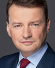

2026-07-30
Projekt wpłynął do Sejmu Druk nr 2997 ↗
w-senacieustawaStanowisko Senatu (2026-11-06)Sejm 10/2997
| Proces | Sejm kadencja 10, nr 2997 |
|---|---|
| Wpłynął | 2026-07-30 |
| Ostatnia zmiana źródła | 2026-11-09 |
| RCL | legislacja.rcl.gov.pl ↗ |
| Źródło | api.sejm.gov.pl ↗ |
393 zdarzeń

10. kadencja, 65. posiedzenie, 4. dzień - Sekretarz Stanu w Ministerstwie Sprawiedliwości Arkadiusz Myrcha 10. kadencja, 65. posiedzenie, 4. dzień (18-09-2026) 49. punkt porządku dziennego: Pierwsze czytanie rządowego projektu ustawy o zmianie ustawy - Kodeks postępowania karnego (druk nr 2997). Sekretarz Stanu w Ministerstwie Sprawiedliwości Arkadiusz Myrcha: Dziękuję, pani marszałek. Przede wszystkim pozdrawiam serdecznie i przyłączam się do tych ciepłych słów dla grupy pana posła Skonieczki, gdyż reprezentujemy ten sam okręg wyborczy. Witam państwa i mieszkańców Kujawsko-Pomorskiego w Sejmie. Projekt ustawy zawarty w druku nr 2997 jest także pewnym pokłosiem dyskusji, którą toczyliśmy przy omawianiu poprzedniego projektu, czyli gruntownej zmiany Kodeksu postępowania karnego. Ten projekt też dotyczy gruntownego uporządkowania pewnej sfery postępowania karnego, wąskiej, precyzyjnej, ale procesowo niezwykle istotnej, a mianowicie pouczeń, które przedstawiane są uczestnikom, stronom tego postępowania na każdym z etapów - zarówno na etapie postępowania przygotowawczego, jak i na etapie postępowania sądowego w postępowaniu rozpoznawczym. To jest o tyle istotne, że pouczenia są gwarancją, są żelazną gwarancją procesową dla wszystkich tych osób i źródłem wiedzy o zakresie praw, obowiązków i wszelkich uprawnień, z których dana osoba, dany uczestnik może skorzystać w zależności od statusu i od etapu tego postępowania. Tych pouczeń i formularzy, które stosowane są w postępowaniu karnym, jest kilkanaście. Przez lata te przepisy były rozbudowywane, modyfikowane. Przez to stały się momentami nieczytelne, mało praktyczne, a formularze przybrały taką dość rozdmuchaną formę. W związku z tym to jest drugi krok, w którym w tej kadencji porządkujemy kwestie pouczeń stosowanych w postępowaniu karnym, tak żeby przede wszystkim były czytelne, jasne i zrozumiałe dla wszystkich osób uczestniczących w postępowaniu. To jest o tyle istotne, że każda osoba po wysłuchaniu tych pouczeń czy po zapoznaniu się z formularzem musi mieć pełną świadomość, jakie prawa jej w związku z tym przysługują. Bo oczywiście nie każdy - chociaż te przepisy starają się ten problem rozwiązać - ma profesjonalną obsługę prawną. Może też jej brakować przy danej czynności procesowej. To jednak nie oznacza, że nie ma prawa wiedzieć, jakie prawa i obowiązki mu przysługują. W związku z tym przepisy Kodeksu postępowania karnego wskazują, jakie pouczenia dotyczą uczestnika postępowania i o czym musi on wiedzieć, tak jak powiedziałem, w zależności od jego statusu, ale także oczywiście od etapu postępowania. Musi wiedzieć, w odniesieniu do jakiej czynności to pouczenie musi nastąpić. Zróżnicowanie tych okoliczności wymusza także zróżnicowany zakres udzielanych informacji. Inny jest bowiem bagaż wiedzy dostarczanej osobie zatrzymanej, a inny - osobie oskarżonej. Inne są informacje niezbędne przy wezwaniu na rozprawę, a inne - przy stosowaniu różnego rodzaju środków procesowych. W związku z tym generalna próba ustandaryzowania przepisów, wyraźne podzielenie i wyselekcjonowanie niezbędnych informacji, które muszą być udzielone, a także wyeliminowanie tych, które po prostu są zbędne, a dzisiaj znajdują się w obszarze pouczeń - to wszystko jest objęte tym projektem ustawy. Co więcej, te przepisy wprowadzają upoważnienie ustawowe dla ministra sprawiedliwości do stosowania przy wydawaniu rozporządzenia jednolitych form formularzy, tak żeby standardy były zakotwiczone nie tylko w samych przepisach, ale także w aspekcie praktycznym, czyli w samych formularzach stosowanych w postępowaniu karnym. To jednak nie koniec. Przepisy umożliwią również to, żeby ta standaryzacja dotyczyła nie tylko przepisów i formularza, ale także tłumaczeń, które są oczywiście nieodzownym elementem postępowań karnych. Chodzi o to, żeby urzędowo były dostępne pouczenia przygotowane w najczęściej stosowanych językach, tak żeby nie trzeba było każdorazowo albo wielokrotnie zlecać tłumaczenia urzędowych dokumentów
10. kadencja, 65. posiedzenie, 4. dzień - Poseł Maciej Tomczykiewicz 10. kadencja, 65. posiedzenie, 4. dzień (18-09-2026) 49. punkt porządku dziennego: Pierwsze czytanie rządowego projektu ustawy o zmianie ustawy - Kodeks postępowania karnego (druk nr 2997). Poseł Maciej Tomczykiewicz: Pani Marszałek! Panie Ministrze! Szanowni Państwo Posłowie! To jest jeden z tych projektów, to jest taki rodzaj legislacji, które są mocno niedoceniane. Mnie się on bardzo podoba i jestem za niego wdzięczny ministerstwu. To jest taka legislacja, która wynika z patrzenia na przepisy, które mamy, nie z perspektywy wielkich zmian, tylko z perspektywy doskonalenia tego, co funkcjonuje. Chodzi o to, żeby to funkcjonowało lepiej. W tym przypadku chodzi o to, żeby osoby uczestniczące w postępowaniu czy to przygotowawczym, czy to sądowym były lepiej poinformowane. Z praktyki prawniczej wiem, że zazwyczaj gdy te pouczenia się dostawało, osoba, której one dotyczyły, nie za bardzo miała czas je przeczytać. Czasami bywało również tak, że przy udzielaniu przez nas, adwokatów i radców prawnych, takiej informacji klient był tak zestresowany, że po prostu tych rzeczy po jakimś czasie już nie pamiętał. Teraz to wszystko będzie ujednolicone, będzie dostępne nie tylko w trakcie czy przy rozpoczęciu konkretnych czynności, ale też na stronie internetowej. Osoba, którą czekają te czynności albo którą czeka rozprawa sądowa, będzie się mogła spokojnie przygotować, bez względu na to, czy ma pełnomocnika lub obrońcę, czy ich nie ma. Będzie mogła sobie usiąść i te podstawowe pouczenia spokojnie przeczytać i przeanalizować w czasie, którego potrzebuje, żeby faktycznie je zrozumieć, a nie by tylko przelecieć je wzrokiem. Ważną zmianą, aktualizacją, która jest wprowadzana tą ustawą, jest to, że to już nie będzie zbiorcze pouczenie. Do tej pory wszystko było wrzucane do jednego wora, żeby było łatwiej. Tak to napychano i napychano, bo trzeba było się wywiązać z formalnego obowiązku pouczenia, tylko osoba, do której to trafiało, nie za bardzo to czytała. Teraz będzie osobny zestaw pouczeń, w zależności od sytuacji procesowej: czy to jest jeszcze postępowanie przygotowawcze, czy to jest postępowanie sądowe. To też pozwoli na to, żeby osoba czytająca te pouczenia nie gubiła się w gąszczu rzeczy, które jej nie dotyczą. Ona już będzie mogła mieć pewność, że to, co dostała od państwa, od funkcjonariusza państwa, dotyczy faktycznie jej sytuacji i że z każdym z tych zapisów ona musi się dokładnie zapoznać i starać się je zrozumieć, a jak nie rozumie, to dopytać funkcjonariusza czy dopytać swojego prawnika, który tę osobę reprezentuje. Tak jak mówię, to są fajne zmiany, bo one pozwalają, żeby państwo polskie po prostu funkcjonowało lepiej, żeby obywatele się w nim lepiej czuli, byli lepiej poinformowani. To nie są wielkie zmiany, ale to są bardzo dobre zmiany. W imieniu klubu Koalicji Obywatelskiej w pełni popieram ten projekt. Bardzo dziękuję. (Oklaski) Przebieg posiedzenia
10. kadencja, 65. posiedzenie, 4. dzień - Poseł Marcin Warchoł 10. kadencja, 65. posiedzenie, 4. dzień (18-09-2026) 49. punkt porządku dziennego: Pierwsze czytanie rządowego projektu ustawy o zmianie ustawy - Kodeks postępowania karnego (druk nr 2997). Poseł Marcin Warchoł: Bardzo dziękuję. Szanowna Pani Marszałek! Panie Ministrze! Szanowni Państwo! Standaryzacja pouczeń jest potrzebna. Ale jaki jest sens wręczania każdemu uczestnikowi takiego samego podręcznika do całego kodeksu, skoro sprawa nie dotyczy akurat tego uczestnika? Nie ma on takiego statusu. Prawidłowy model powinien obejmować trzy elementy: krótkie pouczenie aktualne dotyczące statusu i etapu postępowania, dodatkowe moduły, jeżeli mogą mieć zastosowanie do konkretnych uprawnień i obowiązków, i po trzecie: aktualne wskazanie o terminach i czynnościach. Nadmiar informacji jest dezinformacją. Stąd też w kilkunastostronicowym formularzu miesza się prawa aktualne, przyszłe, wyjątkowe, a nawet te, które nie dotyczą adresata. W takiej sytuacji obywatel tak naprawdę nie wie, co ma zrobić i kiedy. Oto przykłady. Jaki jest sens pouczać świadka o tajemnicy lekarskiej, kiedy ani sprawa, ani zawód świadka nie mają nic wspólnego z medycyną? Jaki jest sens udzielania informacji o zasadach, tajemnicach ściśle tajnych, kiedy ta osoba nie jest agentem ani sprawa nie ma nic wspólnego z tymi postępowaniami? Wreszcie, po co wiedza o statusie świadka anonimowego, którego zadania zagrażają jego życiu albo zdrowiu, skoro sprawa dotyczy np. wypadku drogowego? Nie jest też zasadne np. informowanie świadka o badaniach eliminacyjnych, pobieraniu śliny, włosów czy próbek pisma, jeżeli nikt tego nie będzie od świadka wymagał. Tak samo zbędne jest pouczanie świadka, że może być przesłuchany przez konsula, skoro on nie wybiera się za granicę. I tak dalej. Można by mnożyć te przykłady właśnie dezinformacji tak naprawdę. Dlatego też, doceniając kierunek, panie ministrze, projektu, zgłaszamy te wątpliwości. Nadmiar informacji jest dezinformacją. Sprawa konkretna, status danego uczestnika, etap postępowania - powinny mieć odzwierciedlenie właśnie w tego rodzaju pouczeniu, a nie na zasadzie: każdemu wręczamy podręcznik taki sam do całego kodeksu. Bo tak to trochę wygląda. Tak zrobiliście niestety. Dlatego jesteśmy gotowi poprawić merytorycznie ten wasz projekt i usiąść nad tym w komisji. Dziękuję bardzo. Przebieg posiedzenia
10. kadencja, 65. posiedzenie, 4. dzień - Poseł Mirosław Adam Orliński 10. kadencja, 65. posiedzenie, 4. dzień (18-09-2026) 49. punkt porządku dziennego: Pierwsze czytanie rządowego projektu ustawy o zmianie ustawy - Kodeks postępowania karnego (druk nr 2997). Poseł Mirosław Adam Orliński: Szanowna Pani Marszałek! Wysoka Izbo! Szanowni Państwo! W imieniu Klubu Parlamentarnego Polskie Stronnictwo Ludowe przedstawię stanowisko odnośnie do rządowego projektu ustawy o zmianie ustawy - Kodeks postępowania karnego. Rzeczywiście, tak jak było tutaj powiedziane, zasadniczym celem projektu jest zmiana i ujednolicenie systemu pouczania uczestników postępowania karnego o ich prawach i obowiązkach. Projekt umożliwia wprowadzenie prostszych, bardziej przejrzystych pouczeń dla świadków, pokrzywdzonych, oskarżonych oraz rozszerzenie całej informacji o przysługujących im prawach. Uczestnicy postępowań mieliby otrzymywać tę informację w sposób jasny, klarowny, żeby mogli się z tym zapoznać. Ustalone wzory byłyby dostępne na stronie Ministerstwa Sprawiedliwości. Rzeczywiście jest to ujednolicenie treści tych pouczeń, dostosowanie ich do danego etapu postępowania. Minister sprawiedliwości będzie określał to w formie rozporządzenia. Osoba zatrzymana ma być informowana o możliwości, o prawie dochodzenia swojego odszkodowania czy zadośćuczynienia w przypadku niewłaściwego, niesłusznego zatrzymania. To rzeczywiście wynika również z konstytucyjnych praw i wolności, z konstytucyjnej zasady ochrony wolności osobistej i odpowiedzialności państwa za bezpodstawne pozbawienie wolności. Zmiana w art. 300 Kodeksu postępowania karnego. Projekt przewiduje również rozwiązania dotyczące podejrzanych i oskarżonych, którzy nie ukończyli 18 lat. Projekt rozszerza i porządkuje informacje przekazywane oskarżonemu wraz z doręczeniem mu aktu oskarżenia. Projekt szczegółowo reguluje również informacje przekazywane przed rozprawą. Projekt obejmuje również aspekt związany ze świadkami. Zdaje się, że w tych wszystkich zapisach i zmianach dąży to do ujednolicenia, do uporządkowania tej sytuacji. Rzeczywiście jest to projekt potrzebny. Projekt ma znaczenie gwarancyjne, organizacyjne dla obywatela, dla całego postępowania. Chodzi o prostszy dostęp do informacji, ujednolicenie, jednolitość pouczeń, informowanie wszystkich uczestników. Jako Klub Parlamentarny Polskie Stronnictwo Ludowe popieramy ten projekt. (Oklaski) Przebieg posiedzenia
10. kadencja, 65. posiedzenie, 4. dzień - Poseł Witold Tumanowicz 10. kadencja, 65. posiedzenie, 4. dzień (18-09-2026) 49. punkt porządku dziennego: Pierwsze czytanie rządowego projektu ustawy o zmianie ustawy - Kodeks postępowania karnego (druk nr 2997). Poseł Witold Tumanowicz: Pani Marszałek! Wysoka Izbo! Projekt dotyczy rzeczy pozornie prostej, ale istotnej z punktu widzenia osoby, która styka się z postępowaniem karnym. Samo przekazanie pouczenia nie wystarczy. Człowiek powinien jeszcze być w stanie zrozumieć, jakie ma prawa, jakie obowiązki i co może zrobić w swojej sytuacji. Projekt przewiduje więc uproszczenie języka pouczeń kierowanych m.in. do podejrzanych, oskarżonych, pokrzywdzonych i świadków. Informacje mają w bardziej przystępny sposób wskazywać chociażby dostępne środki odwoławcze, terminy czy możliwość skorzystania z pomocy adwokata lub radcy prawnego. Zmiany dotyczą również pokrzywdzonych i osób zatrzymanych. Mają oni otrzymywać szerszą informację m.in. o możliwości uzyskania odszkodowania, zadośćuczynienia czy dochodzenia roszczeń w przypadku niesłusznego zatrzymania lub tymczasowego aresztowania. Osobne rozwiązania przewidziano dla osób poniżej 18. roku życia, a wzory pouczeń mają być dostępne również w językach obcych. Jednocześnie mają zostać ujednolicone, tak aby obywatel otrzymywał podobnie przedstawione informacje, niezależnie od tego, czy ma do czynienia z sądem, prokuraturą czy organem dokonującym zatrzymania. Przy upraszczaniu takich dokumentów trzeba jednak zachować równowagę. Pouczenie powinno być napisane językiem zrozumiałym dla obywatela, ale jednocześnie na tyle precyzyjnie, aby uproszczenie języka nie prowadziło do wątpliwości co do rzeczywistego zakresu przysługujących mu praw. Najważniejszym sprawdzianem tych zmian będzie więc praktyka, czy nowe pouczenia rzeczywiście będą dla obywateli bardziej zrozumiałe, a jednocześnie pozostaną kompletne i jednoznaczne. Będziemy patrzeć dalej na to, jak ostatecznie będzie wyglądała ustawa. Jesteśmy za tym kierunkiem. Dziękuję bardzo. (Oklaski) Przebieg posiedzenia
10. kadencja, 65. posiedzenie, 4. dzień - Poseł Marcin Józefaciuk 10. kadencja, 65. posiedzenie, 4. dzień (18-09-2026) 49. punkt porządku dziennego: Pierwsze czytanie rządowego projektu ustawy o zmianie ustawy - Kodeks postępowania karnego (druk nr 2997). Poseł Marcin Józefaciuk: Szanowna Pani Marszałek! Wysoka Izbo! Mam kilka pytań. Czy przed wydaniem rozporządzeń nowe wzory pouczeń zostaną poddane badaniom z udziałem osób bez wykształcenia prawniczego, w tym osób nieletnich, starszych oraz znajdujących się w trudnej sytuacji życiowej? W jakich dostępnych formatach będą publikowane i przekazywane pouczenia osobom z niepełnosprawnościami wzroku, słuchu lub trudnościami poznawczymi? Według jakich danych minister sprawiedliwości określi języki obce najczęściej wykorzystywane w postępowaniach karnych i jak często lista tłumaczeń będzie aktualizowana? Czy PJM będzie jednym z tych języków? Dla głuchych jest to pierwszy język, a polski jest językiem obcym. I czy wszystkie rozporządzenia, wzory, tłumaczenia oraz rozwiązania techniczne będą gotowe i dostępne przed 1 stycznia 2027 r.? Dziękuję. Przebieg posiedzenia
10. kadencja, 65. posiedzenie, 4. dzień - Poseł Witold Tumanowicz 10. kadencja, 65. posiedzenie, 4. dzień (18-09-2026) 49. punkt porządku dziennego: Pierwsze czytanie rządowego projektu ustawy o zmianie ustawy - Kodeks postępowania karnego (druk nr 2997). Poseł Witold Tumanowicz: Pani Marszałek! Wysoka Izbo! Obecnie funkcjonują już odrębne wzory pouczeń dla osób, które nie ukończyły 18 lat. Dlatego mam pytanie: W jaki sposób mają zmienić się te pouczenia i co ma sprawić, że będą one rzeczywiście bardziej zrozumiałe niż obecnie? Dziękuję. Przebieg posiedzenia
10. kadencja, 65. posiedzenie, 4. dzień - Poseł Magdalena Małgorzata Kołodziejczak 10. kadencja, 65. posiedzenie, 4. dzień (18-09-2026) 49. punkt porządku dziennego: Pierwsze czytanie rządowego projektu ustawy o zmianie ustawy - Kodeks postępowania karnego (druk nr 2997). Poseł Magdalena Małgorzata Kołodziejczak: Pani Marszałkini! Wysoka Izbo! Panie Ministrze! Ja muszę powiedzieć, że jak przyglądamy się zmianom, które następują w naszym prawodawstwie, szczególnie w przedmiocie prawa karnego, to trzeba przyznać, że to prawo staje się coraz bardziej ludzkie i skierowane do obywatela. I za to panu ministrowi i całemu zespołowi bardzo dziękuję. Natomiast, panie ministrze, ciągle przepisy prawa są pewną trudną sferą życia naszych obywateli. Wiemy wszyscy, że w samorządach, w powiatach są punkty doradztwa prawnego. W związku z tym czy w tych pouczeniach będą być może zawarte informacje, że porady prawne bezpłatnie można uzyskać w takich punktach? To, myślę, byłoby bardzo cenne, a nie wszyscy o tym wiedzą. A jak wiemy, ignorantia iuris nocet, czyli nieznajomość prawa szkodzi. To by pewnie bardzo ułatwiło życie naszym obywatelom. Dziękuję. (Oklaski) Przebieg posiedzenia
10. kadencja, 65. posiedzenie, 4. dzień - Sekretarz Stanu w Ministerstwie Sprawiedliwości Arkadiusz Myrcha 10. kadencja, 65. posiedzenie, 4. dzień (18-09-2026) 49. punkt porządku dziennego: Pierwsze czytanie rządowego projektu ustawy o zmianie ustawy - Kodeks postępowania karnego (druk nr 2997). Sekretarz Stanu w Ministerstwie Sprawiedliwości Arkadiusz Myrcha: Dziękuję, pani marszałek. Dziękuję za te głosy poparcia dla projektu, to bardzo optymistyczne. Wydaje się, że w dość dobrej atmosferze przeprocedujemy nad tym projektem. Pytania generalnie skupiały się wokół dwóch zagadnień, mianowicie przepisów wykonawczych, czyli kształtu formularzy i prac nad nimi, a w ślad za tym tłumaczeń tych dokumentów. Po pierwsze, tak jak wszystkie inne akty, także projekty rozporządzeń będą podlegały procesowi uzgodnień i opiniowania. A więc one będą normalnie w jawnej, transparentnej procedurze podlegały ocenie ze strony zarówno innych resortów, jak i instytucji, które w swoich zadaniach statutowych mają opiniowanie aktów prawnych. W tym aspekcie na pewno nie będziemy się ograniczać, będziemy maksymalnie otwarci. Od początku tej kadencji prowadzimy działania ze specjalną grupą osób, której działalność jest ukierunkowana na upraszczanie języka, chociażby w zakresie odpowiadania na interpelacje poselskie czy właśnie przygotowywania różnych formularzy na etapie przepisów wykonawczych, tak aby one po prostu były jak najbardziej zrozumiałe dla osób czytających te dokumenty. Mamy bowiem pełną świadomość, że język prawny jest dość wyjątkowy i nie zawsze jest się w stanie w pełni zrozumieć intencje stojące za sporządzaniem konkretnych formularzy. A więc tak, oczywiście będziemy robili wszystko, żeby te teksty były jak najbardziej zrozumiałe. Języki oczywiście będziemy dobierali elastycznie, mając na względzie liczbę postępowań z wykorzystywaniem poszczególnych tłumaczeń. Wydaje się więc, że naturalnie to będą te języki, które są najczęściej stosowane, czyli pewnie kilka języków europejskich, na pewno język ukraiński, pewnie język angielski, pewnie język niemiecki, być może języki innych naszych sąsiadów z obszarów przygranicznych. Tak jak powiedziałem, będziemy reagowali na bieżąco, bo to nie są jakieś skomplikowane sytuacje, będzie to tylko wymagało pewnej reakcji rozporządzeniowej, czyli bardzo elastycznej i dość szybkiej. Dziękuję bardzo. (Oklaski) Przebieg posiedzenia
10. kadencja, 67. posiedzenie, 3. dzień - Poseł Sprawozdawca Agnieszka Hanajczyk 10. kadencja, 67. posiedzenie, 3. dzień (22-10-2026) 29. punkt porządku dziennego: Sprawozdanie Komisji Nadzwyczajnej o rządowym projekcie ustawy o zmianie ustawy - Kodeks postępowania karnego (druki nr 2997 i 3170). Poseł Sprawozdawca Agnieszka Hanajczyk: Pani Marszałek! Panie Ministrze! Wysoka Izbo! Mam zaszczyt przedstawić sprawozdanie Komisji Nadzwyczajnej do spraw zmian w kodyfikacjach o rządowym projekcie ustawy o zmianie ustawy - Kodeks postępowania karnego zawartym w druku nr 2997. Sprawozdanie komisji znajduje się w druku nr 3170. Komisja rozpatrzyła projekt na posiedzeniu w dniu 6 października. Projekt ustawy wniesiony przez rząd, przez ministra sprawiedliwości, dotyczy ujednolicenia, unormowania i uregulowania podstawowych procedur dotyczących informowania obywateli o przysługujących im prawach w sposób jasny, precyzyjny i zrozumiały w postępowaniu karnym. W postępowaniu przygotowawczym minister sprawiedliwości ma upoważnienie do określenia wzorów pouczeń, w postępowaniu sądowym go nie ma. Obecnie brak tej regulacji powoduje, że każdy sąd posługuje się własnym pouczeniem. Resort zebrał je ze wszystkich sądów i skala różnic okazała się bardzo duża. Niektóre pouczenia mają po 20 stron drobnego druku i trudno je zrozumieć. Stąd potrzeba regulacji. Projekt wprowadza upoważnienie dla ministra sprawiedliwości do wydania rozporządzeń ze wzorami pouczeń dla oskarżonego, pokrzywdzonego i świadka na etapie sądowym, napisanych językiem zrozumiałym także dla osób bez obrońcy lub pełnomocnika. Według nowego art. 16 § 4 wzory zostaną opublikowane na stronie ministerstwa wraz z tłumaczeniami na najczęściej używane języki obce. Porządkuje się też art. 300, usuwając z pouczeń w postępowaniu przygotowawczym treści dotyczące dopiero etapu sądowego. Rozszerza się pouczenia o prawo do odszkodowania za niewątpliwie niesłuszne zatrzymanie lub tymczasowe aresztowanie i wzmacnia się ochronę osób niepełnoletnich. Posłowie i goście komisji zgłosili kilka uwag do przedłożonego projektu, co znalazło odzwierciedlenie w poprawkach merytorycznych i legislacyjnych przyjętych przez komisję. Biuro Rzecznika Praw Obywatelskich oceniło kierunek zmian bardzo pozytywnie. Wątpliwości zostały wyjaśnione w toku dyskusji na posiedzeniu komisji. Najwięcej dyskusji wzbudził art. 16 § 4. Biuro Legislacyjne pytało o charakter tłumaczeń i listę języków. Ministerstwo wyjaśniło, że lista obejmie ok. 35 języków wskazanych przez sądy. W przypadku języków rzadkich zostają dotychczasowe zasady i środki na koszty postępowań. Komisja przyjęła trzy poprawki. Pierwsza doprecyzowuje w art. 300 pouczenie o możliwości przesłuchania przez konsula. Druga skreśla w art. 339 zbędne odesłanie do art. 353 § 3 w związku z art. 354. Trzecia, przygotowana przez Biuro Legislacyjne, poprawia przepis przejściowy. Zmieniono też datę wejścia w życie na 1 marca 2027 r., co pozwoli na przygotowanie i wydanie ok. 10 rozporządzeń wprowadzających uchwalone przepisy. Biuro Legislacyjne zwróciło także uwagę, że w Sejmie są inne projekty zmieniające Kodeks postępowania karnego, w tym art. 300. Dlatego ten projekt powinien być uchwalony w pierwszej kolejności. Wysoki Sejmie! Ta ustawa to pierwszy krok, który doprowadzi do ustandaryzowania pouczeń także w postępowaniu odwoławczym, a rozważane jest również w przypadku postępowań w sprawach o wykroczenia. Ten projekt ma być fundamentem tych prac. Komisja przyjęła projekt w głosowaniu. Sześciu posłów było za, nikt nie był przeciw, trzech posłów wstrzymało się od głosu. W imieniu komisji wnoszę o uchwalenie projektu ustawy zawartego w druku nr 3170. Dziękuję uprzejmie. (Oklaski) Przebieg posiedzenia
10. kadencja, 67. posiedzenie, 3. dzień - Poseł Maciej Tomczykiewicz 10. kadencja, 67. posiedzenie, 3. dzień (22-10-2026) 29. punkt porządku dziennego: Sprawozdanie Komisji Nadzwyczajnej o rządowym projekcie ustawy o zmianie ustawy - Kodeks postępowania karnego (druki nr 2997 i 3170). Poseł Maciej Tomczykiewicz: Bardzo dziękuję. Pani Marszałek! Panie Ministrze! Wysoka Izbo! Pochylamy się dalej nad rozwiązaniem z pozoru może prozaicznych problemów, ale takich, które dotyczyły bardzo wielu postępowań. W sprawach karnych ważna jest stabilność, ważna jest jasność, szczególnie w takim podstawowym elemencie, o jakim mówimy w przypadku tej ustawy. I o to projekt ministerialny zadbał. Tak że jestem przekonany, że te postępowania w tym małym swoim wycinku będą czytelniejsze i będą też łatwiejsze do prowadzenia. Tego się trzymamy. Drobne poprawki zostały wprowadzone. Liczę na to, że wszyscy państwo, cała Wysoka Izba, poprze ten projekt. Popiera go Koalicja Obywatelska. Przegłosujmy go jak najszybciej, żeby jak najszybciej móc zacząć już pracować nad aktami wykonawczymi. Bardzo dziękuję. (Oklaski) Przebieg posiedzenia
10. kadencja, 67. posiedzenie, 3. dzień - Poseł Michał Pyrzyk 10. kadencja, 67. posiedzenie, 3. dzień (22-10-2026) 29. punkt porządku dziennego: Sprawozdanie Komisji Nadzwyczajnej o rządowym projekcie ustawy o zmianie ustawy - Kodeks postępowania karnego (druki nr 2997 i 3170). Poseł Michał Pyrzyk: Dziękuję bardzo. Szanowna Pani Marszałek! Panie Ministrze! Wysoka Izbo! Celem tego przedłożenia, i to należy podkreślić, jest przede wszystkim wzmocnienie gwarancji procesowych i praw stron oraz zapewnienie, że wszyscy uczestnicy postępowania otrzymają pełną i rzetelną informację o swoich prawach i obowiązkach, i to otrzymają ją w prostym i zrozumiałym języku. Dlatego wprowadzone zostają takie same standardy pouczania we wszystkich sądach w kraju oraz zapewniona zostaje spójność między etapem postępowania przygotowawczego i sądowego. Zakładanym celem przedłożenia jest również ułatwienie dostępu i obniżenie kosztów poprzez udostępnienie wzorów pouczeń wraz z ich tłumaczeniami na najczęściej używane języki obce na stronie internetowej Ministerstwa Sprawiedliwości. Ograniczy to, jak powiedziałem wcześniej, wydatki sądów i organów ścigania na indywidualne tłumaczenia zlecane w tym momencie biegłym. Przedłożenie określa szczegółowy zakres pouczeń przekazywanych m.in. przy doręczaniu aktu oskarżenia, wezwaniu lub zawiadomieniu o terminie posiedzenia, wezwaniu na rozprawę w sprawach z oskarżenia prywatnego, wyroku nakazowego oraz w postępowaniu o wydanie wyroku łącznego. Projekt nakłada na ministra sprawiedliwości obowiązek umieszczania na stronie internetowej ministerstwa, tak jak powiedziałem wcześniej, wzorów pouczeń wraz z ich oficjalnymi tłumaczeniami na języki obce, te najczęściej używane. Wprowadzono obowiązek, jak mówiła pani poseł sprawozdawca, informowania osoby zatrzymanej oraz tymczasowo aresztowanej o prawie i terminie dochodzenia, odszkodowania oraz zadośćuczynienia w przypadku niewątpliwie niesłusznego zatrzymania lub tymczasowego aresztowania. Z etapu przygotowawczego, jak słyszeliśmy, usunięto te pouczenia, które odnoszą się wyłącznie do etapu sądowego, co też zredukuje ich objętość i uczyni je bardziej czytelnymi dla odbiorców. Zgodnie z projektowanymi przepisami ustawa ma wejść w życie, to już mówię o tym terminie, po zmianach wprowadzonych podczas prac w komisji z dniem 1 marca 2027 r. To kilkumiesięczne przesunięcie da sądom, prokuraturze oraz ministrowi sprawiedliwości dodatkowe 2 miesiące na opracowanie, przetłumaczenie na języki obce i wdrożenie wszystkich ustandaryzowanych wzorów formularzy pouczeń. Przepisy te będą stosowane do postępowań wszczętych i niezakończonych przed tym dniem, przy zachowaniu oczywiście skuteczności dotychczas dokonanych czynności procesowych w tym zakresie. W toku prac komisji przeanalizowaliśmy również uwagi zgłoszone w ramach opiniowania, m.in. przez rzecznika praw obywatelskich. Dokonano drobnych poprawek redakcyjnych i doprecyzowania w poszczególnych przepisach. Dlatego Klub Polskie Stronnictwo Ludowe będzie głosować za tym potrzebnym rządowym przedłożeniem. Dziękuję bardzo. (Oklaski) Przebieg posiedzenia
10. kadencja, 67. posiedzenie, 3. dzień - Poseł Aleksandra Leo 10. kadencja, 67. posiedzenie, 3. dzień (22-10-2026) 29. punkt porządku dziennego: Sprawozdanie Komisji Nadzwyczajnej o rządowym projekcie ustawy o zmianie ustawy - Kodeks postępowania karnego (druki nr 2997 i 3170). Poseł Aleksandra Leo: Pani Marszałek! Wysoka Izbo! W postępowaniu karnym sama lista przepisów nie wystarczy. Człowiek musi jeszcze wiedzieć, co te przepisy oznaczają dla niego w konkretnej sytuacji. Bez tej wiedzy trudno skorzystać z przysługujących praw, ale też łatwo nie dopełnić obowiązków. Dlatego sposób i moment przekazania informacji mają realne znaczenie. Projekt porządkuje pouczenia dla podejrzanych, oskarżonych, pokrzywdzonych i świadków. Ich zakres ma być powiązany z etapem sprawy. To rozsądne rozwiązanie, bo osoba wezwana na rozprawę potrzebuje innych informacji niż ktoś, kto dopiero uczestniczy w pierwszym przesłuchaniu. Pouczenie przekazane we właściwym momencie może pomóc podjąć decyzję, złożyć wniosek albo przygotować się do czynności procesowej. Projekt przewiduje też ujednolicenie wzorów pouczeń. Dzięki temu informacje przekazywane uczestnikom postępowań będą oparte na wspólnych zasadach, a ich zakres będzie określony w przepisach. Ma to znaczenie dla rzetelności postępowania, bo każdy powinien otrzymywać potrzebne informacje, niezależnie od tego, na jakim etapie sprawy się znajduje. Ważne jest również udostępnienie wzorów na stronie Ministerstwa Sprawiedliwości oraz ich tłumaczenie na najczęściej używane w postępowaniach karnych języki obce. To ułatwi dostęp do informacji i pozwoli lepiej zrozumieć swoje prawa osobom, które nie posługują się swobodnie językiem polskim. Projekt dopracowuje pouczenia dla pokrzywdzonych. Mają oni otrzymywać informacje m.in. o możliwości uzyskania naprawienia szkody lub kompensaty państwowej, dostępie do pomocy prawnej, środkach ochrony i dostępnych formach pomocy. To ważne, bo pokrzywdzony powinien wiedzieć nie tylko to, że może uczestniczyć w postępowaniu, lecz także to, gdzie szukać wsparcia i jakie kroki może podjąć. Projekt przewiduje też informowanie zatrzymanego oraz osoby tymczasowo aresztowanej o prawie i terminie dochodzenia odszkodowania i zadośćuczynienia w razie niewątpliwie niesłusznego pozbawienia wolności. Taka informacja pozwala poznać przysługujące uprawnienie i jego ramy czasowe. Ma więc znaczenie dla realnej ochrony praw osoby, której wolność została ograniczona. Osobne rozwiązania dotyczą osób, które nie ukończyły 18. roku życia. W określonych sytuacjach pouczenia mają być przekazywane również przedstawicielowi ustawowemu albo osobie sprawującej pieczę. Projekt zakłada też uwzględnienie wieku i stanu zdrowia przy przygotowywaniu wzorów. Chodzi o to, by informacja mogła dotrzeć do osób, które mogą potrzebować dodatkowego wsparcia w jej zrozumieniu. Te zmiany dotyczą spraw, z którymi uczestnicy postępowania stykają się bezpośrednio: przesłuchania, wezwania do sądu, dostępu do pomocy czy możliwości dochodzenia swoich praw. Jasne i właściwie dobrane pouczenia nie rozstrzygają sprawy za uczestnika, ale pomagają mu zrozumieć, co może zrobić, jakie konsekwencje wiążą się z jego decyzjami. To dlatego porządkowanie tych informacji ma sens. Dlatego Klub Parlamentarny Centrum popiera ten projekt. Dziękuję bardzo. Przebieg posiedzenia
10. kadencja, 67. posiedzenie, 3. dzień - Poseł Paweł Śliz 10. kadencja, 67. posiedzenie, 3. dzień (22-10-2026) 29. punkt porządku dziennego: Sprawozdanie Komisji Nadzwyczajnej o rządowym projekcie ustawy o zmianie ustawy - Kodeks postępowania karnego (druki nr 2997 i 3170). Poseł Paweł Śliz: Niepostrzeżenie, z drugiej strony, pani marszałek. Wicemarszałek Monika Wielichowska: Nie, tutaj mam, panie pośle, takie monitory, które tę stronę mocno zasłaniają. Poseł Paweł Śliz: Tak jest. Pani Marszałek! Wysoka Izbo! Ten projekt, który jest, jest projektem, który tak naprawdę ma trochę usprawnić postępowanie karne, które się toczy. Bardzo się cieszę, że wreszcie pracujemy nad takim projektem, że jak przyjdę do prokuratury czy na policję z klientem składającym zeznania bądź wyjaśnienia, nie będę otrzymywał kilkustronicowych pouczeń, których i tak nigdy nie bierzemy, których i tak nigdy nie czytamy, które i tak są do niczego nieprzydatne, bo są, po pierwsze, pisane tak kazuistycznym językiem, że ten człowiek, który jest w postępowaniu przygotowawczym, tak naprawdę tego nie rozumie. Bardzo się cieszę, że jest to w jakiś sposób, po pierwsze, usprawniane, po drugie, kierowane do osoby oskarżonej, pokrzywdzonej, świadka. Bardzo dobrze należy ocenić także fakt dostosowania pouczeń do danego etapu postępowania. W gąszczu tych informacji, kiedy ma się jeszcze na uwadze stres związany ze sprawą i częsty brak doświadczenia w tego typu sytuacjach, bardzo łatwo o pomyłkę i złożenie oświadczenia nie do końca oddającego wiedzę lub wolę danej osoby, a ostatecznie też niezawinione przegapienie np. jakiegoś terminu. Cieszy także to, że ministerstwo zauważyło i dostrzegło potrzebę osobnego i mniej urządowego podejścia do dzieci i nieletnich oraz osób, którym wiek lub stan zdrowia utrudnia zrozumienie urzędowego pisma. Projekt uwzględnia te potrzeby we wzorach pouczeń i wyjaśnień. Przewiduje także przekazywanie określonych pouczeń dotyczących oskarżonego poniżej 18. roku życia jego przedstawicielowi ustawowemu bądź osobie sprawującej nad nim pieczę. Uważam, że ten projekt idzie po prostu z duchem czasu, dlatego Polska 2050 w całości będzie go popierać. Dziękuję. (Oklaski) Przebieg posiedzenia
10. kadencja, 67. posiedzenie, 3. dzień - Poseł Marcin Warchoł 10. kadencja, 67. posiedzenie, 3. dzień (22-10-2026) 29. punkt porządku dziennego: Sprawozdanie Komisji Nadzwyczajnej o rządowym projekcie ustawy o zmianie ustawy - Kodeks postępowania karnego (druki nr 2997 i 3170). Poseł Marcin Warchoł: Szanowna Pani Marszałek! Szanowni Państwo! Panie Ministrze! Nadmiar informacji jest dezinformacją. Jeżeli na kilkunastostronicowym formularzu miesza się prawa aktualne, przyszłe i ewentualne, to tak naprawdę adresat nie wie, co może teraz, co może w przyszłości, na jakim etapie, co powinien teraz zrobić w tym momencie. Dlatego standaryzacja pouczeń jest potrzebna, ale powinna zawierać trzy bardzo istotne elementy. Po pierwsze, krótkie pouczenie odnośnie do danego konkretnego etapu i statusu danego uczestnika postępowania, następnie moduł dodatkowy, zawierający dodatkowe pouczenia tylko wtedy, gdy dane prawo lub obowiązek mogą mieć zastosowanie, i wyraźne wskazanie aktualnych terminów i czynności. Z tych trzech elementów jest skonstruowane właściwe pouczenie danego uczestnika na danym etapie postępowania. Nie ma sensu wręczać każdemu uczestnikowi postępowania takiego samego podręcznika do postępowania karnego, bo w tym momencie osoba, która nie wybiera się za granicę, jest pouczana o przesłuchaniu przed konsulem, osoba, która nie jest lekarzem, jest informowana o tajemnicy lekarskiej, a ktoś, kto nie jest agentem - o tajemnicy państwowej. Zupełnie bez sensu. Powtarzam: dezinformacja zamiast informacji. Te rozwiązania, co do których mieliśmy początkowo pewne wątpliwości, zyskają pewne akceptowalne ramy, więc będziemy ten projekt popierać. Mam jeszcze jedną uwagę, panie ministrze. Jednocześnie toczą się prace nad Kodeksem postępowania karnego i art. 16, który wyraża zasadę lojalności procesowej. Niestety nie wiążą się z nim żadne korzystne konsekwencje dla obywatela. Otóż brak pouczenia lub mylne pouczenie o prawach lub obowiązkach uczestnika nie mogą wywołać ujemnych konsekwencji dla takiego uczestnika postępowania. Tyle na papierze. A co w praktyce? Niestety to nie jest w żaden sposób zarzut odwoławczy. Sądy nie akceptują odwołań, w których uczestnicy skarżą się na mylne pouczenia, na brak tych pouczeń. Wywodzą z tego korzystne dla siebie konsekwencje i są odsyłani z kwitkiem, mogą pisać apelacje na Berdyczów. Uważam, że powinniśmy się również zająć konsekwencjami mylnych pouczeń, skutkami dezinformacji i skutkami tego, że ktoś źle został pouczony, nie został pouczony i np. nie wniósł w terminie apelacji, nie złożył zażalenia, nie złożył odpowiedniej skargi albo ta skarga wpłynęła do niewłaściwego organu. To też trzeba uregulować. Liczę na pracę nad art. 16 również w tym zakresie. Chodzi o to, żeby on wreszcie uzyskał zęby i miał realne zastosowanie w postępowaniu karnym, a nie był tylko pustą deklaracją, że brak pouczenia nie może wywoływać ujemnych skutków. Co z tego, że nie może? To jest na papierze, a niestety w praktyce sądy dalej robią swoje. Dziękuję bardzo. (Oklaski) Przebieg posiedzenia
10. kadencja, 67. posiedzenie, 3. dzień - Poseł Jarosław Sachajko 10. kadencja, 67. posiedzenie, 3. dzień (22-10-2026) 29. punkt porządku dziennego: Sprawozdanie Komisji Nadzwyczajnej o rządowym projekcie ustawy o zmianie ustawy - Kodeks postępowania karnego (druki nr 2997 i 3170). Poseł Jarosław Sachajko: Pani Marszałek! Wysoka Izbo! Panie Ministrze! Ten projekt zasługuje na poparcie, ponieważ wzmacnia ochronę prawną obywateli w postępowaniach karnych. Państwo nie może wymagać od obywatela znajomości setek przepisów, a następnie wykorzystywać jego niewiedzę przeciwko niemu. Pozytywnie oceniam obowiązek bardziej szczegółowego informowania zatrzymanych, podejrzanych, pokrzywdzonych i świadków o ich prawach. Szczególnie ważne jest informowanie o możliwości dochodzenia odszkodowania za niesłuszne zatrzymanie oraz zapewnienie zrozumiałych pouczeń osobom niepełnosprawnym. Silne państwo to takie, które potrafi ścigać przestępców, a jednocześnie skutecznie chroni prawa każdego obywatela. Koło Demokracja Bezpośrednia będzie popierało ten projekt. Dziękuję. Przebieg posiedzenia
10. kadencja, 67. posiedzenie, 3. dzień - Poseł Witold Tumanowicz 10. kadencja, 67. posiedzenie, 3. dzień (22-10-2026) 29. punkt porządku dziennego: Sprawozdanie Komisji Nadzwyczajnej o rządowym projekcie ustawy o zmianie ustawy - Kodeks postępowania karnego (druki nr 2997 i 3170). Poseł Witold Tumanowicz: Pani Marszałek! Wysoka Izbo! Po pracach komisji nad projektem niewiele się zmieniło, co oznacza, że nasze zastrzeżenia do projektu pozostają aktualne. Samo uproszczenie pouczeń dotyczących praw i obowiązków uczestników postępowania jest potrzebne. Obywatel powinien rozumieć, co wynika z przepisów (Gwar na sali, dzwonek) i jakie konsekwencje mogą go spotkać. Projekt przewiduje również publikowanie wzorów pouczeń w językach obcych, tak aby cudzoziemcy mogli łatwiej zapoznać się z przysługującymi im prawami. Tutaj mamy zastrzeżenia. Nie chodzi o to, żeby pozbawiać kogokolwiek prawa do obrony. Chodzi o to, aby kwestie językowe nie stawały się kolejnym sposobem na przeciąganie postępowań karnych. Już dziś znalezienie tłumacza mniej popularnego języka jest problemem. Obawiamy się, że dalsze rozbudowywanie rozwiązań dotyczących tłumaczeń może prowadzić do kolejnych opóźnień i być wykorzystywane do celowej obstrukcji procesowej, a przecież postępowania karne powinny być prowadzone sprawnie. Jeśli cudzoziemiec popełnia przestępstwo, to powinien ponosić odpowiedzialność zgodnie z polskim prawem. A jeśli istnieją podstawy do jego deportacji, to państwo powinno skutecznie doprowadzić do jego wydalenia. Nie potrzebujemy kolejnych rozwiązań, które mogą komplikować i wydłużać postępowania. Mimo że samo uproszczenie pouczeń oceniamy pozytywnie, Konfederacja zagłosuje przeciwko tej ustawie. Dziękuję bardzo. Przebieg posiedzenia
10. kadencja, 67. posiedzenie, 3. dzień - Poseł Witold Tumanowicz 10. kadencja, 67. posiedzenie, 3. dzień (22-10-2026) 29. punkt porządku dziennego: Sprawozdanie Komisji Nadzwyczajnej o rządowym projekcie ustawy o zmianie ustawy - Kodeks postępowania karnego (druki nr 2997 i 3170). Poseł Witold Tumanowicz: Pani Marszałek! Wysoka Izbo! Projekt przewiduje publikowanie wzorów pouczeń w najczęściej używanych językach obcych. Ile dokładnie języków obejmie to rozwiązanie i według jakich kryteriów zostaną wybrane? Czy ministerstwo przewiduje również tłumaczenia na języki rzadziej używane? Jeśli nie, to w jaki sposób będą pouczane osoby, które nie znają języka polskiego ani żadnego z języków objętych tłumaczeniem? Dziękuję. Przebieg posiedzenia
10. kadencja, 67. posiedzenie, 3. dzień - Poseł Barbara Dolniak 10. kadencja, 67. posiedzenie, 3. dzień (22-10-2026) 29. punkt porządku dziennego: Sprawozdanie Komisji Nadzwyczajnej o rządowym projekcie ustawy o zmianie ustawy - Kodeks postępowania karnego (druki nr 2997 i 3170). Poseł Barbara Dolniak: Szanowna Pani Marszałek! Wysoka Izbo! Panie Pośle Tumanowicz! Gdyby był pan w komisji i uczestniczył w pracach nad tym projektem, to wiedziałby pan doskonale, że będą dosyć szerokie tłumaczenia, jeżeli chodzi o liczbę języków. (Poseł Adrian Witczak: 35.) Wyjątkowo głośno pani poseł Hanajczyk powiedziała, jaka to będzie liczba. To będzie szeroki zakres języków i tylko wyjątkowo, naprawdę wyjątkowo rzadkie języki nie będą miały od razu tłumaczenia. To nie opóźni postępowania, dlatego że dla wszystkich sądów będą przygotowane jednakowe w treści tłumaczenia pouczeń. Dzisiaj zdarzają się różne tłumaczenia o różnej treści. A więc w tym projekcie chodzi, po pierwsze, o to, by eliminować trudne zapisy, żeby były precyzyjne i jasne dla odbiorców, a po drugie, by stworzyć (Dzwonek) pouczenia, które będą precyzyjne i jednakowe dla wszystkich zainteresowanych. Mam nadzieję, że do czasu głosowania państwo jednak przemyślicie swoje stanowisko i zagłosujecie za tym projektem ustawy. (Oklaski) (Głos z sali: Brawo!) Przebieg posiedzenia
10. kadencja, 67. posiedzenie, 3. dzień - Poseł Adrian Witczak 10. kadencja, 67. posiedzenie, 3. dzień (22-10-2026) 29. punkt porządku dziennego: Sprawozdanie Komisji Nadzwyczajnej o rządowym projekcie ustawy o zmianie ustawy - Kodeks postępowania karnego (druki nr 2997 i 3170). Poseł Adrian Witczak: Szanowna Pani Marszałek! Wysoki Sejmie! Panie Ministrze! Mam bardzo konkretne pytanie i oczekuję od pana bardzo konkretnej odpowiedzi, bo nasza praca ma sens wtedy, kiedy po jej wykonaniu jest lepiej, niż było. A więc, panie ministrze, czy po przyjęciu tych rozwiązań będzie lepiej? Bardzo dziękuję. (Oklaski) Przebieg posiedzenia
10. kadencja, 67. posiedzenie, 3. dzień - Poseł Jarosław Sachajko 10. kadencja, 67. posiedzenie, 3. dzień (22-10-2026) 29. punkt porządku dziennego: Sprawozdanie Komisji Nadzwyczajnej o rządowym projekcie ustawy o zmianie ustawy - Kodeks postępowania karnego (druki nr 2997 i 3170). Poseł Jarosław Sachajko: Pani Marszałek! Wysoka Izbo! W naszej ocenie ten projekt zasługuje na poparcie. Ale chciałem zapytać o coś troszeczkę obok, o czym już rozmawialiśmy. Chodzi o obowiązkową obecność pełnomocnika dla świadka, tak żeby historia z panią Skrzypek nigdy więcej się nie mogła powtórzyć. Czy widzi pan możliwość zmiany prawa, żeby ta pewność, że będzie pełnomocnik, była? Ja wiem o tym, że zmieniliśmy prawo, tak że sąd o tym decyduje, ale może zdarzyć się tak, że ten pełnomocnik nie będzie obecny przy przesłuchaniu. Dziękuję. Przebieg posiedzenia
10. kadencja, 67. posiedzenie, 3. dzień - Poseł Patryk Jaskulski 10. kadencja, 67. posiedzenie, 3. dzień (22-10-2026) 29. punkt porządku dziennego: Sprawozdanie Komisji Nadzwyczajnej o rządowym projekcie ustawy o zmianie ustawy - Kodeks postępowania karnego (druki nr 2997 i 3170). Poseł Patryk Jaskulski: Nie trzeba włączać okularów, będę mówił z głowy. Szanowna Pani Marszałek! Wysoka Izbo! Panie Ministrze! Można powiedzieć, że piekło zamarzło. Prawo i Sprawiedliwość zapowiedziało poparcie projektu ustawy, który ma poprawiać funkcjonowanie wymiaru sprawiedliwości. Panie pośle Warchoł, życzę panu więcej tego rozumu i rozwagi, bo jest wiele ważnych obszarów, Trybunał Konstytucyjny, KRS, Sąd Najwyższy, gdzie moglibyśmy razem zrobić coś dobrego dla obywateli. (Głos z sali: Ha, ha, ha!) Natomiast ten projekt ustawy jest ważny, bo mniej osób w więzieniach to niższe koszty dla państwa. Oszczędność na jednym więźniu to ponad 60 tys. zł oraz większa szansa na skuteczną resocjalizację. (Poseł Adrian Witczak: To nie ten projekt.) (Głos z sali: Ha, ha, ha!) Jak nie ten projekt? To ten projekt. (Gwar na sali, oklaski) Nie ten projekt? (Poseł Barbara Dolniak: Nie ten projekt.) (Poseł Wioletta Maria Kulpa: Oszukali.) To mnie wprowadzili w błąd. (Głos z sali: Ale okulary były włączone?) W takim razie wrócę z dobrym pytaniem albo powtórzę pytanie pana posła Witczaka: Czy to jest dobry projekt i czy on posłuży skutecznie? Dziękuję bardzo. (Oklaski) (Poseł Adrian Witczak: Patryk, chodź.) (Poseł Artur Jarosław Łącki: Siadaj!) Przebieg posiedzenia
10. kadencja, 67. posiedzenie, 3. dzień - Poseł Wioletta Maria Kulpa 10. kadencja, 67. posiedzenie, 3. dzień (22-10-2026) 29. punkt porządku dziennego: Sprawozdanie Komisji Nadzwyczajnej o rządowym projekcie ustawy o zmianie ustawy - Kodeks postępowania karnego (druki nr 2997 i 3170). Poseł Wioletta Maria Kulpa: Pani Marszałek! Wysoka Izbo! Mam zasadnicze pytanie o jakość rozwiązań w praktyce. Rzecznik praw obywatelskich wskazuje, że katalogi pouczeń mogą być jednocześnie nadmiernie rozbudowane i niepełne. W sprawie karnej zbyt długi ogólny formularz może utrudnić odnalezienie informacji najważniejszej, a pominięcie konkretnego uprawnienia może osłabić ochronę strony. Czy przed (Gwar na sali, dzwonek) wydaniem rozporządzeń wzory pouczeń zostaną przetestowane z udziałem osób bez wykształcenia prawniczego, w tym małoletnich, osób starszych i osób z niepełnosprawnościami, aby sprawdzić, czy rzeczywiście rozumieją, jakie działania mogą lub muszą podjąć? Jak Ministerstwo Sprawiedliwości zapewni, że pouczenia będą dopasowane do konkretnego etapu postępowania, a nie staną się obszernymi formularzami zawierającymi informacje nieistotne dla danej sprawy? Kto i w jakim trybie będzie (Gwar na sali, dzwonek) aktualizował wzory pouczeń, gdy zmienią się przepisy k.p.k. i jak rząd zapobiegnie sytuacji, w której obywatel otrzyma pouczenie nieaktualne lub pomijające istotne uprawnienie? Dziękuję bardzo. (Oklaski) Przebieg posiedzenia
10. kadencja, 67. posiedzenie, 3. dzień - Poseł Lidia Czechak 10. kadencja, 67. posiedzenie, 3. dzień (22-10-2026) 29. punkt porządku dziennego: Sprawozdanie Komisji Nadzwyczajnej o rządowym projekcie ustawy o zmianie ustawy - Kodeks postępowania karnego (druki nr 2997 i 3170). Poseł Lidia Czechak: Szanowna Pani Marszałek! Moje pierwsze pytanie dotyczy rozszerzenia pouczeń o informacje dotyczące prawa do odszkodowania i zadośćuczynienia za niewątpliwie słuszne (Gwar na sali, dzwonek) zatrzymanie lub tymczasowe aresztowanie. Czy Ministerstwo Sprawiedliwości dysponuje szczegółowymi danymi dotyczącymi liczby takich przypadków w ostatnich 5 latach, wysokości wypłaconych odszkodowań oraz średniego czasu rozpatrywania tych roszczeń? Dlaczego rząd ogranicza proponowane zmiany do obowiązku informacyjnego, zamiast równocześnie przedstawić rozwiązania ułatwiające obywatelom skuteczne dochodzenie rekompensaty za niesłuszne pozbawienie wolności? Drugie pytanie mam bardzo podobne do pytania pani poseł Wioletty Kulpy, bo rzecznik zwróciła uwagę na to, czy to pouczenie będzie rzeczywiście zrozumiałe dla osób starszych, niepełnosprawnych, osób o niższym poziomie wykształcenia lub niekorzystających z pomocy adwokata. Czy przewidziano niezależną ocenę ich czytelności i zrozumiałości, a także jakie konsekwencje procesowe poniesie sąd, w przypadku udzielenia pouczenia niepełnego, niezrozumiałego lub wprowadzającego obywatela w błąd? Dziękuję. (Oklaski) Przebieg posiedzenia
10. kadencja, 67. posiedzenie, 3. dzień - Sekretarz Stanu w Ministerstwie Sprawiedliwości Arkadiusz Myrcha 10. kadencja, 67. posiedzenie, 3. dzień (22-10-2026) 29. punkt porządku dziennego: Sprawozdanie Komisji Nadzwyczajnej o rządowym projekcie ustawy o zmianie ustawy - Kodeks postępowania karnego (druki nr 2997 i 3170). Sekretarz Stanu w Ministerstwie Sprawiedliwości Arkadiusz Myrcha: Dobre pouczenie to mniej osadzonych. Pani Marszałek! Wysoka Izbo! Na wstępie dziękuję za tak szerokie poparcie polityczne tego projektu, co też pokazuje, że zmiany w prawie karnym, które konsekwentnie prezentujemy w tej kadencji, zmierzają z jednej strony do usprawnienia tych procesów, a z drugiej strony do poszerzenia gwarancji procesowych dla wszystkich osób, które w tych postępowaniach uczestniczą. Tak mieliśmy w przypadku przywołanego już przez pana posła Sachajkę przypisu dotyczącego udziału pełnomocnika dla świadka w postępowaniu przygotowawczym. Natomiast ta ustawa to jest kolejny krok w kierunku uporządkowania, ustandaryzowania pouczeń, których udziela się wszystkim uczestnikom postępowań karnych w zależności od danego etapu. Te pouczenia to nie są jakieś zbędne formalności, nie mają być zwykłymi tabelkami, które tylko dla porządku mają zostać przedstawione świadkom, podejrzanym czy innym uczestnikom. Wręcz przeciwnie. Na pouczeniach spoczywa niezwykle wielka waga i odpowiedzialność procesowa. One są swoistym łącznikiem pomiędzy osobami nieznającymi przepisów prawa a organami procesowymi, czyli prokuratorem czy sądem. To one umożliwiają zrozumienie meandrów poszczególnych przepisów, poszczególnych instytucji prawnych. Dlatego tak ważne jest, że muszą być podawane i prezentowane w sposób przejrzysty, precyzyjny, ale także w sposób ustandaryzowany. Nasza nowelizacja wychodzi naprzeciw tym dwóm zjawiskom. Z jednej strony standaryzacja. Tak, standaryzacja, bo praktyka pokazuje, że w sądach na terenie całego kraju, na różnych szczeblach, w różny sposób kształtowane są pouczenia, a gwarancje procesowe to nie jest coś, co można tworzyć w oderwaniu od pewnych standardów, co można czynić siłami poszczególnej jednostki sądownictwa powszechnego. Mówimy tu o przestrzeganiu gwarancji, które bardzo często mają zakotwiczenie w przepisach konstytucji. Dlatego tak ważne jest stworzenie pewnego standardu, który później będzie punktem wyjścia dla prokuratora czy sędziego, żeby w miarę możliwości na potrzeby kolejnego etapu postępowania, czy to dla świadka, dla pełnomocnika, dla lekarza, w zależności od sytuacji, już tylko to doprecyzować. Ale standard musi być wspólny dla wszystkich naszych obywateli bez względu na miejsce zamieszkania, bez względu na to, przed jakim sądem czy przed jaką prokuraturą toczą się ich postępowania. Prosty język. Pouczenie nie może być zbitką paragrafów, zbitką przepisów, zbitką tekstu prawnego, który dla osób niemających wiedzy prawniczej po prostu jest, przepraszam za określenie, prawniczym bełkotem. Nie bez kozery przynoszę przykładowe pouczenia, żeby pokazać, jak dużo dobrego może się zmienić dla naszych obywateli. Proszę zwrócić uwagę: pouczenie o uprawnieniach i obowiązkach pokrzywdzonego, czyli tego, który jest ofiarą przestępstw. Otrzymujesz to pouczenie, ponieważ jesteś pokrzywdzonym. Jako pokrzywdzony masz prawo wiedzieć, jakie są twoje prawa i obowiązki - to jest właśnie prosty język, którym będziemy się kierowali, przygotowując rozporządzenia i tworząc standardy. One oczywiście będą zawarte w aktach wykonawczych, a te, jak każde inne, podlegają uzgodnieniom, opiniowaniu, konsultacjom. A więc na pewno to nie będzie przebiegało w ten sposób, że w zaciszu jakiegoś gabinetu czy na ministerialnych korytarzach nagle powstanie kilkanaście wzorów pouczeń. Wręcz przeciwnie, to powstanie z udziałem organizacji pozarządowych, ekspertów od prostego języka, którzy od początku tej kadencji są zatrudnieni także w Ministerstwie Sprawiedliwości właśnie po to, żeby na różnych etapach ten trudny, hermetyczny, prawniczy język
| Klub | Za | Przeciw | Wstrz. | Nieobec. |
|---|---|---|---|---|
| KO | 149 | 0 | 0 | 7 |
| P. Adamowicz U. Augustyn S. Bielawska P. Bliźniuk M. Bochenek K. Bojarski P. Borys M. Bosacki M. Chmielewski A. Chybicka J. Cichoń Z. Czernow B. Dolniak A. Domański R. Dowhan M. Filiks J. Frydrych K. Frysztak P. Gabriel K. Gadowski A. Gajewska K. Gajewska E. Gapińska Z. Gawlik E. Gelert A. Gierada R. Giertych W. Giziński M. Golbik S. Gorczyca K. Grabczuk J. Grabiec M. Gromadzka B. Grygorcewicz M. Gzik T. Głogowski P. Głowski K. Habura A. Hanajczyk I. Hartwich M. Hok Ł. Horbatowski K. Jachira R. Jagła M. Janyska M. Jaros P. Jaskulski D. Jazłowiecka D. Jaśkowiec P. Kandyba J. Karnowski I. Karolewska K. Kierzek-Koperska J. Kluzik-Rostkowska Z. Konwiński T. Kostuś U. Koszutska A. Kot P. Kowal I. Kozłowska E. Kołodziej M. Kołodziejczak M. Kołodziejczak M. Koźlakiewicz I. Krawczyk M. Krawczyk R. Kropiwnicki A. Krzemiński H. Krzywonos-Strycharska M. Krząkała W. Król K. Królak P. Lachowicz S. Lamczyk M. Lasek G. Lenartowicz I. Leszczyna B. Lisowska K. Lubnauer A. Marchewka D. Marek P. Masełko K. Matusik-Lipiec J. Meysztowicz K. Mieszkowski C. Mroczek A. Myrcha G. Napieralski D. Niedziela J. Niedźwiedzki M. Niemczyk J. Niezgodzka S. Nitras B. Nowacka T. Nowak M. Okła-Drewnowicz P. Olszewski K. Osos P. Papke K. Pawliczak K. Piekarska L. Pietrzczyk K. Piątkowski K. Plocke E. Polak A. Pomaska M. Popielarz M. Pępek R. Rak M. Roguska M. Rosa J. Rutnicki M. Rząsa K. Sibińska R. Siemaszko T. Siemoniak K. Skowrońska W. Smarduch A. Sobolak M. Sowa K. Stachowicz F. Sterczewski P. Suski A. Szewiński H. Szopiński K. Szumilas T. Szymański A. Szłapka W. Sługocki A. Tajner C. Tomczyk M. Tomczykiewicz M. Tracz K. Truskolaski D. Tusk J. Urbaniak A. Uznańska-Wiśniewska R. Wardzała J. Wałęsa M. Wielichowska A. Witczak M. Witczak P. Witek A. Wojciechowska B. Wołoszański M. Wróbel B. Zawieja W. Zembaczyński U. Zielińska A. Łepkowska-Gołaś D. Łoboda M. Łośko A. Łuczak K. Łuczak A. Łącki Ł. Ściebiorowski | ||||
| PiS | 140 | 0 | 0 | 7 |
| A. Adamczyk W. Andzel D. Arciszewska-Mielewczyk I. Arent M. Ast P. Babinetz B. Bartuś R. Bochenek J. Bogucki J. Borowiak K. Bortniczuk B. Borys-Szopa L. Burzyńska M. Błaszczak A. Chojecki K. Choma D. Chorosińska T. Chrzan K. Ciecióra K. Czarnecki W. Czarnecki P. Czarnek A. Czartoryski L. Czechak A. Czerwińska K. Czochara W. Dajczak Z. Dolata B. Dorywalski P. Drabek J. Dziedziczak A. Dąbrowska-Banaszek M. Filipek-Sobczak R. Fogiel A. Gawron G. Gaża A. Gembicka P. Gliński M. Golińska M. Gosek K. Gołojuch M. Grabowski M. Gróbarczyk K. Gwiazdowski A. Górska C. Hoc Z. Hoffmann P. Hreniak M. Jach N. Kaczmarczyk F. Kaczyński J. Kaczyński P. Kaleta S. Kaleta J. Kanthak M. Kałużny A. Kosztowniak H. Kowalczyk M. Kowalski B. Kownacki J. Krajewski L. Krasulski A. Krupka M. Krystian P. Król M. Kuchciński W. Kulpa M. Kurowska W. Kurowski Z. Kuźmiuk E. Leniart J. Lichocka G. Lorek A. Macierewicz E. Malik D. Matecki J. Materna G. Matusiak M. Matuszewski M. Małecki A. Milczanowska D. Milewski J. Mosiński M. Moskal A. Mrówczyński M. Ociepa B. Olbryś J. Osuch A. Paluch T. Pamuła B. Piecha G. Piechowiak A. Pieczarka D. Piontkowski S. Pogoda J. Polaczek P. Polak M. Porzucek K. Płażyński Z. Rau M. Romanowski R. Romanowski U. Rusecka J. Sasin P. Sałek A. Schmidt J. Sellin E. Siarka S. Skwarek K. Smoliński K. Sobolewski A. Soin D. Stefaniuk M. Subocz M. Suski W. Szarama A. Szałabawka J. Szczurek-Żelazko P. Szrot S. Szwed K. Sójka K. Tchórzewski R. Telus P. Uruski M. Warchoł R. Warwas J. Warzecha M. Wassermann R. Weber M. Wesoły P. Wicher J. Wieczorek T. Wilk E. Witek A. Wojciechowska van Heukelom A. Wojtyszek M. Woś G. Woźniak T. Woźniak B. Wróblewski M. Wójcik J. Zieliński T. Zieliński Z. Ziobro S. Łukaszewicz A. Śliwka J. Świat | ||||
| RozwojPlus | 39 | 0 | 0 | 1 |
| A. Baluch R. Bartosik Z. Chmielowiec A. Cicholska J. Cieszyński M. Cieślak E. Duda S. Giżyński R. Gontarz A. Gut-Mostowy M. Gwóźdź M. Horała P. Jabłoński M. Jakubiak F. Kapinos Ł. Kmita M. Koc W. Krajewski A. Kryj K. Kubów A. Kwiecień K. Lipiec M. Machałek G. Macko M. Morawiecki M. Pawłowska G. Puda P. Rychlik Ł. Schreiber O. Semeniuk-Patkowska M. Stachowiak-Różecka K. Szczucki S. Szynkowski vel Sęk R. Terlecki W. Tomaszewski S. Tułajew P. Uściński W. Zubowski I. Zyska A. Ścigaj | ||||
| PSL-TD | 31 | 0 | 0 | 1 |
| W. Bartoszewski P. Bejda M. Biernacki A. Dziedzic A. Grzyb H. Kiepura D. Klimczak W. Kosiniak-Kamysz S. Krajewski A. Kłopotek R. Lubczyk M. Maliszewski U. Nowogórska M. Orliński K. Paszyk U. Pasławska M. Pyrzyk I. Raś J. Rzepa W. Różyński T. Samborski M. Sawicki C. Siekierski H. Smolarz Z. Sosnowski M. Sroka J. Tomczak S. Tomczyszyn P. Zgorzelski Z. Ziejewski J. Zięba-Gzik B. Żelazowska | ||||
| Lewica | 21 | 0 | 0 | 0 |
| B. Borowiec W. Czarzasty J. Czerniak A. Dziemianowicz-Bąk K. Gawkowski D. Gosek-Popiołek K. Kotula P. Kowal A. Kucharska-Dziedzic M. Kulasek W. Nowicka D. Olko A. Sikora W. Szczepański A. Szejna T. Tomaszewski T. Trela K. Ueberhan J. Wicha D. Wieczorek A. Żukowska | ||||
| Konfederacja | 1 | 15 | 0 | 0 |
| K. Berkowicz K. Bosak K. Bosak B. Foltyn S. Mentzen K. Mulawa B. Pejo M. Połuboczek G. Płaczek K. Szymański K. Tuduj W. Tumanowicz M. Wawer R. Wilk P. Wipler A. Zapałowski | ||||
| Centrum | 14 | 0 | 0 | 1 |
| I. Bodnar E. Burkiewicz Ż. Cwalina-Śliwowska P. Hennig-Kloska R. Kasprzyk R. Komarewicz A. Leo B. Okuła B. Oliwiecka R. Petru N. Pietrykowski M. Skonieczka M. Suchoń E. Szymanowska S. Ćwik | ||||
| Polska2050 | 14 | 0 | 0 | 1 |
| A. Buczyńska A. Gomoła M. Gramatyka P. Górnikiewicz B. Hołownia S. Hołownia A. Luboński M. Nowak Ł. Osmalak B. Romowicz E. Schädler P. Strach W. Tomczak K. Wnuk P. Śliz | ||||
| niez. | 6 | 1 | 0 | 0 |
| M. Józefaciuk J. Kowalski P. Matysiak Ł. Mejza J. Mucha P. Zalewski T. Zimoch | ||||
| Demokracja | 3 | 1 | 0 | 0 |
| J. Ardanowski P. Kukiz T. Rzymkowski J. Sachajko | ||||
| Razem | 4 | 0 | 0 | 0 |
| M. Konieczny M. Stożek A. Zandberg M. Zawisza | ||||
| Konfederacja_KP | 0 | 2 | 0 | 1 |
| R. Fritz W. Skalik S. Zawiślak | ||||
Brak zdarzeń dla wybranych filtrów.
Projekt ustawa z dnia o zmianie ustawy – Kodeks postępowania karnego Art. 1. W ustawie z dnia 6 czerwca 1997 r. – Kodeks postępowania karnego (Dz. U. z 2026 r. poz. 490, 421, 638, 760, 882 i 901) wprowadza się następujące zmiany: 1) w art. 16 dodaje się § 4 w brzmieniu: „§ 4. Wzory pouczeń określonych przez Ministra Sprawiedliwości, w drodze rozporządzeń, na podstawie niniejszego kodeksu umieszcza się na stronie internetowej Ministerstwa Sprawiedliwości wraz z ich tłumaczeniem na języki obce najczęściej wykorzystywane w postępowaniu karnym.”; 2) w art. 244: a) w § 2 po wyrazach „jak również o treści art. 248 § 1 i 2” dodaje się wyrazy „oraz o prawie i terminie dochodzenia odszkodowania i zadośćuczynienia w wypadku niewątpliwie niesłusznego zatrzymania”, b) § 5 otrzymuje brzmienie: „§ 5. Minister Sprawiedliwości określi, w drodze rozporządzenia, wzór pouczenia, o którym mowa w § 2, mając na względzie konieczność zrozumienia pouczenia także przez osoby niekorzystające z pomocy pełnomocnika.”; 3) w art. 263 w § 8 po wyrazach „oraz art. 612 § 1,” dodaje się wyrazy „a także o prawie i terminie dochodzenia odszkodowania i zadośćuczynienia w wypadku niewątpliwie niesłusznego tymczasowego aresztowania,”; 4) w art. 300: a) w § 1 zdanie pierwsze i zdanie drugie otrzymują brzmienie: „Przed pierwszym przesłuchaniem poucza się podejrzanego o jego uprawnieniach: do składania wyjaśnień, do odmowy składania wyjaśnień lub odmowy odpowiedzi na pytania, do informacji o treści zarzutów i ich zmianach, do składania wniosków o dokonanie czynności śledztwa lub dochodzenia, do udziału w czynnościach śledztwa lub dochodzenia, do korzystania z pomocy obrońcy, w tym do wystąpienia o obrońcę z urzędu w wypadku określonym w art. 78 i art. 78a, do końcowego zaznajomienia z materiałami postępowania przygotowawczego, jak również o uprawnieniach określonych w art. 23a § 1 i 4, art. 72 § 1 i 2, art. 156 § 5 i 5a, art. 301 i art. 335 oraz o obowiązkach i konsekwencjach wskazanych w art. 74, art. 75, art. 117 § 2 i 2a, art. 133 § 2, art. 138 i art. 139. Ponadto podejrzanego, który nie ukończył 18 lat, poucza się o prawie do podejmowania czynności na korzyść podejrzanego przez osoby, o których mowa w art. 76, i do obecności osób, o których mowa w art. 299b, podczas czynności z udziałem podejrzanego oraz o obowiązkach organów prowadzących postępowanie karne, obejmujących realizację praw podejrzanego, który nie ukończył 18 lat, które wynikają z art. 202, art. 214 i art. 215, oraz o zasadach stosowania środków zapobiegawczych i sposobie wykonywania pozbawienia wolności wynikającego z art. 212 Kodeksu karnego wykonawczego, a także o roli organów uczestniczących w postępowaniu karnym.”, b) w § 2 zdanie pierwsze i zdanie drugie otrzymują brzmienie: „Przed pierwszym przesłuchaniem albo niezwłocznie po ustaleniu pokrzywdzonego, jeżeli odstępuje się od jego przesłuchania, poucza się pokrzywdzonego o posiadaniu statusu strony procesowej w postępowaniu przygotowawczym oraz o wynikających z tego uprawnieniach, w szczególności: do składania wniosków o dokonanie czynności śledztwa lub dochodzenia i o warunkach uczestniczenia w tych czynnościach, określonych w art. 51, art. 52 i art. 315–318, do korzystania z pomocy pełnomocnika, w tym do złożenia wniosku o wyznaczenie pełnomocnika z urzędu w okolicznościach wskazanych w art. 78, jak również o uprawnieniach określonych w art. 23a § 1 i 4, art. 49a § 2, art. 156 § 5, art. 204, art. 306, art. 315a i art. 337a oraz o obowiązkach i konsekwencjach wskazanych w art. 117 § 2 i 2a, art. 138, art. 139 i art. 192 § 1. Pouczenie obejmuje również informacje o: możliwościach naprawienia szkody lub zadośćuczynienia za doznaną krzywdę przez oskarżonego lub uzyskania kompensaty państwowej, dostępie do pomocy prawnej, dostępnych środkach ochrony i pomocy, o których mowa w ustawie z dnia 28 listopada 2014 r. o ochronie i pomocy dla pokrzywdzonego i świadka, pomocy przewidzianej w art. 43 § 8 Kodeksu karnego wykonawczego, możliwości wydania europejskiego nakazu ochrony, organizacjach wsparcia pokrzywdzonych oraz możliwości zwrotu kosztów poniesionych w związku z udziałem w postępowaniu.”, c) § 3 otrzymuje brzmienie: „§ 3. Przed pierwszym przesłuchaniem poucza się świadka o jego uprawnieniach i obowiązkach oraz przekazuje informacje niezbędne do realizacji tych uprawnień i obowiązków, które wynikają z art. 117 § 2a, art. 148a § 1, art. 177 § 1, 1a i 2, art. 179 § 1, art. 180 § 1–4, art. 182, art. 183 § 1, art. 184 § 1 i 7, art. 185, art. 186, art. 192 § 2–4, art. 192a § 1 i 2, art. 285 § 1 i 2, art. 286 i art. 287 § 1 i 2, oraz o zakazach dowodowych, prawie do korzystania z pomocy pełnomocnika, w tym do złożenia wniosku o wyznaczenie pełnomocnika z urzędu w okolicznościach wskazanych w art. 78, możliwości zwrotu kosztów poniesionych w związku z udziałem w postępowaniu, dostępnych środkach ochrony i pomocy, o których mowa w ustawie z dnia 28 listopada 2014 r. o ochronie i pomocy dla pokrzywdzonego i świadka, pomocy przewidzianej w art. 43 § 8 Kodeksu karnego wykonawczego i możliwości przesłuchania przez konsula. Pouczenie należy wręczyć świadkowi na piśmie; świadek otrzymanie pouczenia potwierdza podpisem.”, d) § 4 otrzymuje brzmienie: „§ 4. Minister Sprawiedliwości określi, w drodze rozporządzenia: 1) wzór pisemnego: a) pouczenia, o którym mowa w § 1 oraz w art. 517c § 2 i 2a, w tym odrębny dla osób, które nie ukończyły 18 lat, mając na względzie konieczność zrozumienia pouczenia przez osoby niekorzystające z pomocy obrońcy, osoby nieporadne ze względu na wiek lub stan zdrowia lub osoby, które nie ukończyły 18 lat, b) pouczenia, o którym mowa w § 2, w tym odrębny dla osób, które nie ukończyły 18 lat, mając na względzie konieczność zrozumienia pouczenia przez osoby niekorzystające z pomocy pełnomocnika, osoby nieporadne ze względu na wiek lub stan zdrowia lub osoby, które nie ukończyły 18 lat, c) pouczenia, o którym mowa w § 3, w tym odrębny dla osób, które nie ukończyły 18 lat, mając na względzie konieczność zrozumienia pouczenia przez osoby niekorzystające z pomocy pełnomocnika, osoby nieporadne ze względu na wiek lub stan zdrowia lub osoby, które nie ukończyły 18 lat; 2) wzór pisemnych: a) wyjaśnień, o których mowa w § 3a, dla osoby, o której mowa w § 1, odrębny dla osób nieporadnych ze względu na wiek lub stan zdrowia oraz osób, które nie ukończyły 18 lat, mając na względzie konieczność zrozumienia wyjaśnień przez te osoby, b) wyjaśnień, o których mowa w § 3a, dla osoby, o której mowa w § 2, odrębny dla osób nieporadnych ze względu na wiek lub stan zdrowia oraz osób, które nie ukończyły 18 lat, mając na względzie konieczność zrozumienia wyjaśnień przez te osoby, c) wyjaśnień, o których mowa w § 3a, dla osoby, o której mowa w § 3, odrębny dla osób nieporadnych ze względu na wiek lub stan zdrowia oraz osób, które nie ukończyły 18 lat, mając na względzie konieczność zrozumienia wyjaśnień przez te osoby.”; 5) w art. 338: a) § 1a otrzymuje brzmienie: „§ 1a. Oskarżonego poucza się również o uprawnieniach i obowiązkach oraz przekazuje informacje niezbędne do realizacji tych uprawnień i obowiązków, które wynikają z § 3, z art. 23a § 1 i 4, art. 75 § 1 i 2, art. 76, art. 138, art. 139, art. 156 § 1, 2 i 3, art. 338a, art. 338b i art. 349 § 8 zdanie trzecie, oraz o prawie do korzystania z pomocy obrońcy, w tym do wystąpienia o obrońcę z urzędu w wypadku określonym w art. 78 i art. 78a, jak również o tym, że w zależności od wyniku procesu oskarżony może być obciążony kosztami procesu, w tym wyznaczenia obrońcy z urzędu.”, b) dodaje się § 7 i 8 w brzmieniu: „§ 7. Jeżeli oskarżony nie ukończył 18 lat to pouczenie, o którym mowa w § 1, 1a i 2, doręcza się również przedstawicielowi ustawowemu lub osobie, pod której pieczą oskarżony pozostaje, albo innej osobie wskazanej albo wyznaczonej, o której mowa w art. 76a. § 8. Minister Sprawiedliwości określi, w drodze rozporządzenia, wzór pisemnego pouczenia, o którym mowa w § 1, 1a i 2, mając na względzie konieczność zrozumienia pouczenia także przez osoby niekorzystające z pomocy obrońcy, osoby nieporadne ze względu na wiek lub stan zdrowia lub osoby, które nie ukończyły 18 lat.”; 6) w art. 339: a) w § 5 skreśla się zdanie trzecie, b) dodaje się § 6–8 w brzmieniu: „§ 6. Doręczając oskarżonemu zawiadomienie o terminie posiedzenia albo wezwanie na posiedzenie, poucza się go o uprawnieniach i obowiązkach oraz przekazuje informacje niezbędne do realizacji tych uprawnień i obowiązków, które wynikają z § 5, z art. 23a § 1 i 4, art. 72 § 1 i 2, art. 75 § 1 i 2, art. 76, art. 76a, art. 96, art. 117 § 2, 2a i 3a, art. 138, art. 139, art. 156 § 1, 2 i 3, art. 338b, art. 341 § 1–3, art. 343 § 2, 3, 5 i 7, art. 343a § 1 i 2, art. 353 § 3 w zw. z art. 354, art. 360 i art. 361 w zw. z art. 95b § 3, art. 374 § 4, 7 i 9 w zw. z art. 96a, art. 377 § 1 i 3, art. 422 § 1 i 2 i art. 447 § 5, oraz o prawie do korzystania z pomocy obrońcy, w tym do wystąpienia o obrońcę z urzędu w wypadku określonym w art. 78 i art. 78a, jak również o tym, że w zależności od wyniku procesu oskarżony może być obciążony kosztami procesu, w tym wyznaczenia obrońcy z urzędu, a także o prawie i terminie dochodzenia odszkodowania i zadośćuczynienia w wypadku niesłusznego skazania lub zastosowania środków zabezpieczających. Jeżeli oskarżony nie ukończył 18 lat to pouczenie doręcza się również przedstawicielowi ustawowemu lub osobie, pod której pieczą oskarżony pozostaje, albo innej osobie wskazanej albo wyznaczonej, o której mowa w art. 76a. § 7. Doręczając pokrzywdzonemu zawiadomienie o terminie posiedzenia albo wezwanie na posiedzenie, poucza się go o możliwości zakończenia postępowania bez przeprowadzenia rozprawy, a także o uprawnieniach i obowiązkach oraz przekazuje informacje niezbędne do realizacji tych uprawnień i obowiązków, które wynikają z § 5, z art. 23a § 1 i 4, art. 49a § 2, art. 53 i art. 54 § 1, w tym do wcześniejszego złożenia oświadczenia, o którym mowa w art. 54 § 1, i do składania wniosków o dokonanie czynności w postępowaniu sądowym, z art. 117 § 2, 2a i 3a, art. 138, art. 139, art. 148a § 1, art. 156 § 1, 2 i 3, art. 204, art. 337a, art. 341 § 1 i 3, art. 343 § 2, 3, 5 i 7, art. 343a § 1 i 2, art. 349 § 8 zdanie trzecie, art. 354 pkt 1 i 2, art. 374 § 4 i 9 w zw. z art. 96a, art. 444 § 1 i art. 447 § 5, oraz o prawie do korzystania z pomocy pełnomocnika, w tym do złożenia wniosku o wyznaczenie pełnomocnika z urzędu w okolicznościach wskazanych w art. 78, jak również o możliwości zwrotu kosztów poniesionych w związku z udziałem w postępowaniu. Pouczenie obejmuje również informacje o: możliwościach naprawienia szkody lub zadośćuczynienia za doznaną krzywdę przez oskarżonego lub uzyskania kompensaty państwowej, dostępie do pomocy prawnej, dostępnych środkach ochrony i pomocy, o których mowa w ustawie z dnia 28 listopada 2014 r. o ochronie i pomocy dla pokrzywdzonego i świadka, pomocy przewidzianej w art. 43 § 8 Kodeksu karnego wykonawczego, możliwości wydania europejskiego nakazu ochrony oraz organizacjach wsparcia pokrzywdzonych. § 8. Minister Sprawiedliwości określi, w drodze rozporządzenia, wzór pisemnego: 1) pouczenia, o którym mowa w § 6, mając na względzie konieczność zrozumienia pouczenia także przez osoby niekorzystające z pomocy obrońcy, osoby nieporadne ze względu na wiek lub stan zdrowia lub osoby, które nie ukończyły 18 lat; 2) pouczenia, o którym mowa w § 7, mając na względzie konieczność zrozumienia pouczenia także przez osoby niekorzystające z pomocy pełnomocnika, osoby nieporadne ze względu na wiek lub stan zdrowia lub osoby, które nie ukończyły 18 lat.”; 7) w art. 343 w § 5 skreśla się zdanie drugie; 8) w art. 353: a) § 4 otrzymuje brzmienie: „§ 4. Doręczając oskarżonemu wezwanie na rozprawę albo zawiadomienie o jej terminie, poucza się go o uprawnieniach i obowiązkach oraz przekazuje informacje niezbędne do realizacji tych uprawnień i obowiązków, które wynikają z § 1 i 2, z art. 72 § 1 i 2, art. 76a, art. 100 § 3, art. 117 § 2, 2a i 3a, art. 175, art. 360, art. 361, art. 374 § 1–2, 4, 7 i 9, art. 376, art. 377 § 1 i 3, art. 378a, art. 382, art. 387, art. 419 § 1, art. 422 § 1, 2 i 2a i art. 447 § 5, oraz o prawie i terminie dochodzenia odszkodowania i zadośćuczynienia w wypadku niesłusznego skazania lub zastosowania środków zabezpieczających.”, b) po § 4a dodaje się § 4b i 4c w brzmieniu: „§ 4b. Doręczając pokrzywdzonemu zawiadomienie o terminie rozprawy, poucza się go o uprawnieniach i obowiązkach oraz przekazuje informacje niezbędne do realizacji tych uprawnień i obowiązków, które wynikają z art. 23a § 1 i 4, art. 49a § 2, art. 53 i art. 54 § 1, w tym do składania wniosków o dokonanie czynności w postępowaniu sądowym, z art. 117 § 2, 2a i 3a, art. 138, art. 139, art. 148a § 1, art. 156 § 1, 2 i 3, art. 204, art. 337a, art. 350 § 4, art. 374 § 4 i 9, art. 387, art. 402 § 1 zdanie trzecie i art. 447 § 5, oraz o prawie do korzystania z pomocy pełnomocnika, w tym do złożenia wniosku o wyznaczenie pełnomocnika z urzędu w okolicznościach wskazanych w art. 78, jak również o możliwości zwrotu kosztów poniesionych w związku z udziałem w postępowaniu. Pouczenie obejmuje również informacje o: możliwościach naprawienia szkody lub zadośćuczynienia za doznaną krzywdę przez oskarżonego lub uzyskania kompensaty państwowej, dostępie do pomocy prawnej, dostępnych środkach ochrony i pomocy, o których mowa w ustawie z dnia 28 listopada 2014 r. o ochronie i pomocy dla pokrzywdzonego i świadka, pomocy przewidzianej w art. 43 § 8 Kodeksu karnego wykonawczego, możliwości wydania europejskiego nakazu ochrony oraz organizacjach wsparcia pokrzywdzonych. § 4c. Doręczając świadkowi wezwanie na rozprawę, poucza się go o uprawnieniach i obowiązkach oraz przekazuje informacje niezbędne do realizacji tych uprawnień i obowiązków, które wynikają z art. 117 § 2a, art. 148a § 1, art. 177 § 1, 1a i 2, art. 179 § 1, art. 180 § 1–4, art. 182, art. 183, art. 184 § 1 i 7, art. 185, art. 186, art. 192 § 2–4, art. 192a § 1 i 2, art. 285 § 1 i 2, art. 286, art. 287 § 1 i 2 i art. 390 § 2–4, oraz o zakazach dowodowych, prawie do korzystania z pomocy pełnomocnika, w tym do złożenia wniosku o wyznaczenie pełnomocnika z urzędu w okolicznościach wskazanych w art. 78, możliwości zwrotu kosztów poniesionych w związku z udziałem w postępowaniu, dostępnych środkach ochrony i pomocy, o których mowa w ustawie z dnia 28 listopada 2014 r. o ochronie i pomocy dla pokrzywdzonego i świadka, pomocy przewidzianej w art. 43 § 8 Kodeksu karnego wykonawczego i możliwości przesłuchania przez konsula.”, c) dodaje się § 6 i 7 w brzmieniu: „§ 6. Jeżeli oskarżony nie ukończył 18 lat to pouczenie, o którym mowa w § 3, 4 i 4a, doręcza się również przedstawicielowi ustawowemu lub osobie, pod której pieczą oskarżony pozostaje, albo innej osobie wskazanej albo wyznaczonej, o której mowa w art. 76a. § 7. Minister Sprawiedliwości określi, w drodze rozporządzenia, wzór pisemnego: 1) pouczenia, o którym mowa w § 3 i 4, oraz pouczenia oskarżonego, o którym mowa w § 4a, mając na względzie konieczność zrozumienia pouczenia także przez osoby niekorzystające z pomocy obrońcy, osoby nieporadne ze względu na wiek lub stan zdrowia lub osoby, które nie ukończyły 18 lat; 2) pouczenia, o którym mowa w § 4b, mając na względzie konieczność zrozumienia pouczenia także przez osoby niekorzystające z pomocy pełnomocnika, osoby nieporadne ze względu na wiek lub stan zdrowia lub osoby, które nie ukończyły 18 lat; 3) pouczenia, o którym mowa w § 4c, mając na względzie konieczność zrozumienia pouczenia także przez osoby niekorzystające z pomocy pełnomocnika, osoby nieporadne ze względu na wiek lub stan zdrowia lub osoby, które nie ukończyły 18 lat.”; 9) w art. 489 dodaje się § 3–5 w brzmieniu: „§ 3. Doręczając oskarżycielowi prywatnemu zawiadomienie o terminie posiedzenia pojednawczego, poucza się go o uprawnieniach i obowiązkach oraz przekazuje informacje niezbędne do realizacji tych uprawnień i obowiązków, które wynikają z § 2, z art. 117 § 2, 2a i 3a, art. 138, art. 139, art. 156 § 1, 2 i 3, art. 204, art. 374 § 4 i 9 w zw. z art. 96a, art. 491 § 1, art. 492 § 1, art. 493, art. 494 § 1, art. 495 § 1 i 2, art. 496 i art. 497 § 1, oraz o prawie do korzystania z pomocy pełnomocnika, w tym do złożenia wniosku o wyznaczenie pełnomocnika z urzędu w okolicznościach wskazanych w art. 78, jak również o możliwości zwrotu kosztów poniesionych w związku z udziałem w postępowaniu. Pouczenie obejmuje również informację o możliwości naprawienia szkody lub zadośćuczynienia za doznaną krzywdę przez oskarżonego. § 4. Doręczając oskarżonemu zawiadomienie o terminie posiedzenia pojednawczego, poucza się go o uprawnieniach i obowiązkach oraz przekazuje informacje niezbędne do realizacji tych uprawnień i obowiązków, które wynikają z § 2, z art. 72 § 1 i 2, art. 75 § 1 i 2, art. 76, art. 76a, art. 117 § 2, 2a i 3a, art. 138, art. 139, art. 156 § 1, 2 i 3, art. 374 § 4, 7 i 9 w zw. z art. 96a, art. 491, art. 492 § 1, art. 493, art. 494 § 1, art. 495 § 1 i 2, art. 496 § 1 i 2 i art. 497 § 1, oraz o prawie do korzystania z pomocy obrońcy, w tym do wystąpienia o obrońcę z urzędu w wypadku określonym w art. 78, jak również o tym, że w zależności od wyniku procesu oskarżony może być obciążony kosztami procesu, w tym wyznaczenia obrońcy z urzędu. Jeżeli oskarżony nie ukończył 18 lat to pouczenie doręcza się również przedstawicielowi ustawowemu lub osobie, pod której pieczą oskarżony pozostaje, albo innej osobie wskazanej albo wyznaczonej, o której mowa w art. 76a. § 5. Minister Sprawiedliwości określi, w drodze rozporządzenia, wzór pisemnego: 1) pouczenia, o którym mowa w § 3, mając na względzie konieczność zrozumienia pouczenia także przez osoby niekorzystające z pomocy pełnomocnika, osoby nieporadne ze względu na wiek lub stan zdrowia lub osoby, które nie ukończyły 18 lat; 2) pouczenia, o którym mowa w § 4, mając na względzie konieczność zrozumienia pouczenia także przez osoby niekorzystające z pomocy obrońcy, osoby nieporadne ze względu na wiek lub stan zdrowia lub osoby, które nie ukończyły 18 lat.”; 10) w art. 505: a) § 2 otrzymuje brzmienie: „§ 2. Doręczając stronom i pokrzywdzonemu odpis wyroku nakazowego, poucza się ich o prawie, terminie i sposobie wniesienia sprzeciwu i skutkach jego wniesienia albo niewniesienia oraz przekazuje informacje niezbędne do realizacji tego uprawnienia, które wynikają z art. 119, art. 123 § 1 i 3, art. 124, art. 126 § 1, art. 506 § 2, 5 i 6 i art. 507. Ponadto pokrzywdzonego poucza się o tym, że warunkiem wniesienia sprzeciwu jest złożenie w terminie, o którym mowa w art. 506 § 1, niepóźniej niż jednocześnie ze sprzeciwem oświadczenia, że będzie on działał w charakterze oskarżyciela posiłkowego.”, b) dodaje się § 4 w brzmieniu: „§ 4. Minister Sprawiedliwości określi, w drodze rozporządzenia, wzór pisemnego pouczenia, o którym mowa w § 2, mając na względzie konieczność zrozumienia pouczenia także przez osoby niekorzystające z pomocy obrońcy lub pełnomocnika, osoby nieporadne ze względu na wiek lub stan zdrowia lub osoby, które nie ukończyły 18 lat.”; 11) w art. 517c w § 2 w zdaniu pierwszym po wyrazach „art. 139” dodaje się wyrazy „ , jak również o treści art. 517h § 1”; 12) w art. 573 dodaje się § 4 i 5 w brzmieniu: „§ 4. Doręczając skazanemu wezwanie na rozprawę albo zawiadomienie o jej terminie, poucza się go o uprawnieniach i obowiązkach oraz przekazuje informacje niezbędne do realizacji tych uprawnień i obowiązków, które wynikają z § 2, z art. 72 § 1 i 2, art. 76, art. 76a, art. 117 § 2, 2a i 3a, art. 138, art. 139, art. 156 § 1, 2 i 3, art. 374 § 4, 7 i 9, art. 376 § 1 i 2, art. 377 § 1 i 3, art. 382, art. 402 § 1 zdanie trzecie, art. 419 § 1 i art. 422 § 1 i 2, oraz o prawie do korzystania z pomocy obrońcy, w tym do wystąpienia o obrońcę z urzędu w wypadku określonym w art. 78. Jeżeli skazany nie ukończył 18 lat to pouczenie doręcza się również przedstawicielowi ustawowemu lub osobie, pod której pieczą skazany pozostaje, a
z dnia o zmianie ustawy – Kodeks postępowania karnego Art. 1. W ustawie z dnia 6 czerwca 1997 r. – Kodeks postępowania karnego (Dz. U. z 2026 r. poz. 490, 421, 638, 760, 882 i 901) wprowadza się następujące zmiany: 1) w art. 16 dodaje się § 4 w brzmieniu: „§ 4. Wzory pouczeń określonych przez Ministra Sprawiedliwości, w drodze rozporządzeń, na podstawie niniejszego kodeksu umieszcza się na stronie internetowej Ministerstwa Sprawiedliwości wraz z ich tłumaczeniem na języki obce najczęściej wykorzystywane w postępowaniu karnym.”; 2) w art. 244: w § 2 po wyrazach „jak również o treści art. 248 § 1 i 2” dodaje się wyrazy „oraz a) o prawie i terminie dochodzenia odszkodowania i zadośćuczynienia w wypadku niewątpliwie niesłusznego zatrzymania”, b) § 5 otrzymuje brzmienie: „§ 5. Minister Sprawiedliwości określi, w drodze rozporządzenia, wzór pouczenia, o którym mowa w § 2, mając na względzie konieczność zrozumienia pouczenia także przez osoby niekorzystające z pomocy pełnomocnika.”; w art. 263 w § 8 po wyrazach „oraz art. 612 § 1,” dodaje się wyrazy „a także o prawie 3) i terminie dochodzenia odszkodowania i zadośćuczynienia w wypadku niewątpliwie niesłusznego tymczasowego aresztowania,”; 4) w art. 300: w § 1 zdanie pierwsze i drugie otrzymują brzmienie: a) „Przed pierwszym przesłuchaniem poucza się podejrzanego o jego uprawnieniach: do składania wyjaśnień, do odmowy składania wyjaśnień lub odmowy odpowiedzi na pytania, do informacji o treści zarzutów i ich zmianach, do składania wniosków o dokonanie czynności śledztwa lub dochodzenia, do udziału w czynnościach śledztwa lub dochodzenia, do korzystania z pomocy obrońcy, w tym do wystąpienia o obrońcę z urzędu w wypadku określonym w art. 78 i art. 78a, do końcowego zaznajomienia z materiałami postępowania przygotowawczego, jak również Nazwa pliku : V5_305-80.NK Liczba stron : 11 Data : 2026-10-07 X kadencja/druk nr 2997 2 o uprawnieniach określonych w art. 23a § 1 i 4, art. 72 § 1 i 2, art. 156 § 5 i 5a, art. 301 i art. 335, o możliwości przesłuchania przez konsula, o której mowa w art. 26 ustawy z dnia 25 czerwca 2015 r. – Prawo konsularne (Dz. U. z 2026 r. poz. 711), oraz o obowiązkach i konsekwencjach wskazanych w art. 74, art. 75, art. 117 § 2 i 2a, art. 133 § 2, art. 138 i art. 139. Ponadto podejrzanego, który nie ukończył 18 lat, poucza się o prawie do podejmowania czynności na korzyść podejrzanego przez osoby, o których mowa w art. 76, i do obecności osób, o których mowa w art. 299b, podczas czynności z udziałem podejrzanego oraz o obowiązkach organów prowadzących postępowanie karne, obejmujących realizację praw podejrzanego, który nie ukończył 18 lat, które wynikają z art. 202, art. 214 i art. 215, oraz o zasadach stosowania środków zapobiegawczych i sposobie wykonywania pozbawienia wolności wynikającego z art. 212 Kodeksu karnego wykonawczego, a także o roli organów uczestniczących w postępowaniu karnym.”, w § 2 zdanie pierwsze i drugie otrzymują brzmienie: b) „Przed pierwszym przesłuchaniem albo niezwłocznie po ustaleniu pokrzywdzonego, jeżeli odstępuje się od jego przesłuchania, poucza się pokrzywdzonego o posiadaniu statusu strony procesowej w postępowaniu przygotowawczym oraz o wynikających z tego uprawnieniach, w szczególności: do składania wniosków o dokonanie czynności śledztwa lub dochodzenia i o warunkach uczestniczenia w tych czynnościach, określonych w art. 51, art. 52 i art. 315–318, do korzystania z pomocy pełnomocnika, w tym do złożenia wniosku o wyznaczenie pełnomocnika z urzędu w okolicznościach wskazanych w art. 78, jak również o uprawnieniach określonych w art. 23a § 1 i 4, art. 49a § 2, art. 156 § 5, art. 204, art. 306, art. 315a i art. 337a oraz o obowiązkach i konsekwencjach wskazanych w art. 117 § 2 i 2a, art. 138, art. 139 i art. 192 § 1. Pouczenie obejmuje również informacje o: możliwościach naprawienia szkody lub zadośćuczynienia za doznaną krzywdę przez oskarżonego lub uzyskania kompensaty państwowej, dostępie do pomocy prawnej, dostępnych środkach ochrony i pomocy, o których mowa w ustawie z dnia 28 listopada 2014 r. o ochronie i pomocy dla pokrzywdzonego i świadka, pomocy przewidzianej w art. 43 § 8 Kodeksu karnego wykonawczego, możliwości wydania europejskiego nakazu ochrony, organizacjach wsparcia pokrzywdzonych oraz możliwości zwrotu kosztów poniesionych w związku z udziałem w postępowaniu.”, Nazwa pliku : V5_305-80.NK Liczba stron : 11 Data : 2026-10-07 X kadencja/druk nr 2997 c) § 3 otrzymuje brzmienie: 3 „§ 3. Przed pierwszym przesłuchaniem poucza się świadka o jego uprawnieniach i obowiązkach oraz przekazuje informacje niezbędne do realizacji tych uprawnień i obowiązków, które wynikają z art. 117 § 2a, art. 148a § 1, art. 177 § 1, 1a i 2, art. 179 § 1, art. 180 § 1–4, art. 182, art. 183 § 1, art. 184 § 1 i 7, art. 185, art. 186, art. 192 § 2–4, art. 192a § 1 i 2, art. 285 § 1 i 2, art. 286 i art. 287 § 1 i 2, oraz o zakazach dowodowych, prawie do korzystania z pomocy pełnomocnika, w tym do złożenia wniosku o wyznaczenie pełnomocnika z urzędu w okolicznościach wskazanych w art. 78, możliwości zwrotu kosztów poniesionych w związku z udziałem w postępowaniu, dostępnych środkach ochrony i pomocy, o których mowa w ustawie z dnia 28 listopada 2014 r. o ochronie i pomocy dla pokrzywdzonego i świadka, pomocy przewidzianej w art. 43 § 8 Kodeksu karnego wykonawczego i możliwości przesłuchania przez konsula, o której mowa w art. 26 ustawy z dnia 25 czerwca 2015 r. – Prawo konsularne. Pouczenie należy wręczyć świadkowi na piśmie; świadek otrzymanie pouczenia potwierdza podpisem.”, d) § 4 otrzymuje brzmienie: „§ 4. Minister Sprawiedliwości określi, w drodze rozporządzenia: 1) wzór pisemnego: pouczenia, o którym mowa w § 1 oraz w art. 517c § 2 i 2a, w tym odrębny a) dla osób, które nie ukończyły 18 lat, mając na względzie konieczność zrozumienia pouczenia przez osoby niekorzystające z pomocy obrońcy, osoby nieporadne ze względu na wiek lub stan zdrowia lub osoby, które nie ukończyły 18 lat, pouczenia, o którym mowa w § 2, w tym odrębny dla osób, które nie b) ukończyły 18 lat, mając na względzie konieczność zrozumienia pouczenia przez osoby niekorzystające z pomocy pełnomocnika, osoby nieporadne ze względu na wiek lub stan zdrowia lub osoby, które nie ukończyły 18 lat, pouczenia, o którym mowa w § 3, w tym odrębny dla osób, które nie c) ukończyły 18 lat, mając na względzie konieczność zrozumienia pouczenia przez osoby niekorzystające z pomocy pełnomocnika, osoby nieporadne ze względu na wiek lub stan zdrowia lub osoby, które nie ukończyły 18 lat; Nazwa pliku : V5_305-80.NK Liczba stron : 11 Data : 2026-10-07 X kadencja/druk nr 2997 2) wzór pisemnych: 4 wyjaśnień, o których mowa w § 3a, dla osoby, o której mowa w § 1, a) odrębny dla osób nieporadnych ze względu na wiek lub stan zdrowia oraz osób, które nie ukończyły 18 lat, mając na względzie konieczność zrozumienia wyjaśnień przez te osoby, wyjaśnień, o których mowa w § 3a, dla osoby, o której mowa w § 2, b) odrębny dla osób nieporadnych ze względu na wiek lub stan zdrowia oraz osób, które nie ukończyły 18 lat, mając na względzie konieczność zrozumienia wyjaśnień przez te osoby, wyjaśnień, o których mowa w § 3a, dla osoby, o której mowa w § 3, c) odrębny dla osób nieporadnych ze względu na wiek lub stan zdrowia oraz osób, które nie ukończyły 18 lat, mając na względzie konieczność zrozumienia wyjaśnień przez te osoby.”; 5) w art. 338: a) § 1a otrzymuje brzmienie: „§ 1a. Oskarżonego poucza się również o uprawnieniach i obowiązkach oraz przekazuje informacje niezbędne do realizacji tych uprawnień i obowiązków, które wynikają z § 3, z art. 23a § 1 i 4, art. 75 § 1 i 2, art. 76, art. 138, art. 139, art. 156 § 1, 2 i 3, art. 338a, art. 338b i art. 349 § 8 zdanie trzecie, oraz o prawie do korzystania z pomocy obrońcy, w tym do wystąpienia o obrońcę z urzędu w wypadku określonym w art. 78 i art. 78a, jak również o tym, że w zależności od wyniku procesu oskarżony może być obciążony kosztami procesu, w tym wyznaczenia obrońcy z urzędu.”, b) dodaje się § 7 i 8 w brzmieniu: „§ 7. Jeżeli oskarżony nie ukończył 18 lat to pouczenie, o którym mowa w § 1, 1a i 2, doręcza się również przedstawicielowi ustawowemu lub osobie, pod której pieczą oskarżony pozostaje, albo innej osobie wskazanej albo wyznaczonej, o której mowa w art. 76a. § 8. Minister Sprawiedliwości określi, w drodze rozporządzenia, wzór pisemnego pouczenia, o którym mowa w § 1, 1a i 2, mając na względzie konieczność zrozumienia pouczenia także przez osoby niekorzystające z pomocy obrońcy, osoby nieporadne ze względu na wiek lub stan zdrowia lub osoby, które nie ukończyły 18 lat.”; Nazwa pliku : V5_305-80.NK Liczba stron : 11 Data : 2026-10-07 X kadencja/druk nr 2997 6) w art. 339: a) w § 5 skreśla się zdanie trzecie, b) dodaje się § 6–8 w brzmieniu: 5 „§ 6. Doręczając oskarżonemu zawiadomienie o terminie posiedzenia albo wezwanie na posiedzenie, poucza się go o uprawnieniach i obowiązkach oraz przekazuje informacje niezbędne do realizacji tych uprawnień i obowiązków, które wynikają z § 5, z art. 23a § 1 i 4, art. 72 § 1 i 2, art. 75 § 1 i 2, art. 76, art. 76a, art. 96, art. 117 § 2, 2a i 3a, art. 138, art. 139, art. 156 § 1, 2 i 3, art. 338b, art. 341 § 1–3, art. 343 § 2, 3, 5 i 7, art. 343a § 1 i 2, art. 360 i art. 361 w związku z art. 95b § 3, art. 374 § 4, 7 i 9 w związku z art. 96a, art. 377 § 1 i 3, art. 422 § 1 i 2 i art. 447 § 5, oraz o prawie do korzystania z pomocy obrońcy, w tym do wystąpienia o obrońcę z urzędu w wypadku określonym w art. 78 i art. 78a, jak również o tym, że w zależności od wyniku procesu oskarżony może być obciążony kosztami procesu, w tym wyznaczenia obrońcy z urzędu, a także o prawie i terminie dochodzenia odszkodowania i zadośćuczynienia w wypadku niesłusznego skazania lub zastosowania środków zabezpieczających. Jeżeli oskarżony nie ukończył 18 lat to pouczenie doręcza się również przedstawicielowi ustawowemu lub osobie, pod której pieczą oskarżony pozostaje, albo innej osobie wskazanej albo wyznaczonej, o której mowa w art. 76a. § 7. Doręczając pokrzywdzonemu zawiadomienie o terminie posiedzenia albo wezwanie na posiedzenie, poucza się go o możliwości zakończenia postępowania bez przeprowadzenia rozprawy, a także o uprawnieniach i obowiązkach oraz przekazuje informacje niezbędne do realizacji tych uprawnień i obowiązków, które wynikają z § 5, z art. 23a § 1 i 4, art. 49a § 2, art. 53 i art. 54 § 1, w tym do wcześniejszego złożenia oświadczenia, o którym mowa w art. 54 § 1, i do składania wniosków o dokonanie czynności w postępowaniu sądowym, z art. 117 § 2, 2a i 3a, art. 138, art. 139, art. 148a § 1, art. 156 § 1, 2 i 3, art. 204, art. 337a, art. 341 § 1 i 3, art. 343 § 2, 3, 5 i 7, art. 343a § 1 i 2, art. 349 § 8 zdanie trzecie, art. 354 pkt 1 i 2, art. 374 § 4 i 9 w związku z art. 96a, art. 444 § 1 i art. 447 § 5, oraz o prawie do korzystania z pomocy pełnomocnika, w tym do złożenia wniosku o wyznaczenie pełnomocnika z urzędu w okolicznościach wskazanych w art. 78, jak również o możliwości zwrotu kosztów poniesionych w związku z udziałem w postępowaniu. Pouczenie obejmuje również informacje o: możliwościach naprawienia szkody lub Nazwa pliku : V5_305-80.NK Liczba stron : 11 Data : 2026-10-07 X kadencja/druk nr 2997 6 zadośćuczynienia za doznaną krzywdę przez oskarżonego lub uzyskania kompensaty państwowej, dostępie do pomocy prawnej, dostępnych środkach ochrony i pomocy, o których mowa w ustawie z dnia 28 listopada 2014 r. o ochronie i pomocy dla pokrzywdzonego i świadka, pomocy przewidzianej w art. 43 § 8 Kodeksu karnego wykonawczego, możliwości wydania europejskiego nakazu ochrony oraz organizacjach wsparcia pokrzywdzonych. § 8. Minister Sprawiedliwości określi, w drodze rozporządzenia, wzór pisemnego: pouczenia, o którym mowa w § 6, mając na względzie konieczność 1) zrozumienia pouczenia także przez osoby niekorzystające z pomocy obrońcy, osoby nieporadne ze względu na wiek lub stan zdrowia lub osoby, które nie ukończyły 18 lat; pouczenia, o którym mowa w § 7, mając na względzie konieczność 2) zrozumienia pouczenia także przez osoby niekorzystające z pomocy pełnomocnika, osoby nieporadne ze względu na wiek lub stan zdrowia lub osoby, które nie ukończyły 18 lat.”; 7) w art. 343 w § 5 skreśla się zdanie drugie; 8) w art. 353: a) § 4 otrzymuje brzmienie: „§ 4. Doręczając oskarżonemu wezwanie na rozprawę albo zawiadomienie o jej terminie, poucza się go o uprawnieniach i obowiązkach oraz przekazuje informacje niezbędne do realizacji tych uprawnień i obowiązków, które wynikają z § 1 i 2, z art. 72 § 1 i 2, art. 76a, art. 100 § 3, art. 117 § 2, 2a i 3a, art. 175, art. 360, art. 361, art. 374 § 1–2, 4, 7 i 9, art. 376, art. 377 § 1 i 3, art. 378a, art. 382, art. 387, art. 419 § 1, art. 422 § 1, 2 i 2a i art. 447 § 5, oraz o prawie i terminie dochodzenia odszkodowania i zadośćuczynienia w wypadku niesłusznego skazania lub zastosowania środków zabezpieczających.”, b) po § 4a dodaje się § 4b i 4c w brzmieniu: „§ 4b. Doręczając pokrzywdzonemu zawiadomienie o terminie rozprawy, poucza się go o uprawnieniach i obowiązkach oraz przekazuje informacje niezbędne do realizacji tych uprawnień i obowiązków, które wynikają z art. 23a § 1 i 4, art. 49a § 2, art. 53 i art. 54 § 1, w tym do składania wniosków o dokonanie czynności w postępowaniu sądowym, z art. 117 § 2, 2a i 3a, art. 138, art. 139, art. 148a § 1, Nazwa pliku : V5_305-80.NK Liczba stron : 11 Data : 2026-10-07 X kadencja/druk nr 2997 7 art. 156 § 1, 2 i 3, art. 204, art. 337a, art. 350 § 4, art. 374 § 4 i 9, art. 387, art. 402 § 1 zdanie trzecie i art. 447 § 5, oraz o prawie do korzystania z pomocy pełnomocnika, w tym do złożenia wniosku o wyznaczenie pełnomocnika z urzędu w okolicznościach wskazanych w art. 78, jak również o możliwości zwrotu kosztów poniesionych w związku z udziałem w postępowaniu. Pouczenie obejmuje również informacje o: możliwościach naprawienia szkody lub zadośćuczynienia za doznaną krzywdę przez oskarżonego lub uzyskania kompensaty państwowej, dostępie do pomocy prawnej, dostępnych środkach ochrony i pomocy, o których mowa w ustawie z dnia 28 listopada 2014 r. o ochronie i pomocy dla pokrzywdzonego i świadka, pomocy przewidzianej w art. 43 § 8 Kodeksu karnego wykonawczego, możliwości wydania europejskiego nakazu ochrony oraz organizacjach wsparcia pokrzywdzonych. § 4c. Doręczając świadkowi wezwanie na rozprawę, poucza się go o uprawnieniach i obowiązkach oraz przekazuje informacje niezbędne do realizacji tych uprawnień i obowiązków, które wynikają z art. 117 § 2a, art. 148a § 1, art. 177 § 1, 1a i 2, art. 179 § 1, art. 180 § 1–4, art. 182, art. 183, art. 184 § 1 i 7, art. 185, art. 186, art. 192 § 2–4, art. 192a § 1 i 2, art. 285 § 1 i 2, art. 286, art. 287 § 1 i 2 i art. 390 § 2–4, oraz o zakazach dowodowych, prawie do korzystania z pomocy pełnomocnika, w tym do złożenia wniosku o wyznaczenie pełnomocnika z urzędu w okolicznościach wskazanych w art. 78, możliwości zwrotu kosztów poniesionych w związku z udziałem w postępowaniu, dostępnych środkach ochrony i pomocy, o których mowa w ustawie z dnia 28 listopada 2014 r. o ochronie i pomocy dla pokrzywdzonego i świadka, pomocy przewidzianej w art. 43 § 8 Kodeksu karnego wykonawczego i możliwości przesłuchania przez konsula, o której mowa w art. 26 ustawy z dnia 25 czerwca 2015 r. – Prawo konsularne.”, c) dodaje się § 6 i 7 w brzmieniu: „§ 6. Jeżeli oskarżony nie ukończył 18 lat to pouczenie, o którym mowa w § 3, 4 i 4a, doręcza się również przedstawicielowi ustawowemu lub osobie, pod której pieczą oskarżony pozostaje, albo innej osobie wskazanej albo wyznaczonej, o której mowa w art. 76a. Nazwa pliku : V5_305-80.NK Liczba stron : 11 Data : 2026-10-07 X kadencja/druk nr 2997 8 § 7. Minister Sprawiedliwości określi, w drodze rozporządzenia, wzór pisemnego: pouczenia, o którym mowa w § 3 i 4, oraz pouczenia oskarżonego, o którym 1) mowa w § 4a, mając na względzie konieczność zrozumienia pouczenia także przez osoby niekorzystające z pomocy obrońcy, osoby nieporadne ze względu na wiek lub stan zdrowia lub osoby, które nie ukończyły 18 lat; pouczenia, o którym mowa w § 4b, mając na względzie konieczność 2) zrozumienia pouczenia także przez osoby niekorzystające z pomocy pełnomocnika, osoby nieporadne ze względu na wiek lub stan zdrowia lub osoby, które nie ukończyły 18 lat; pouczenia, o którym mowa w § 4c, mając na względzie konieczność 3) zrozumienia pouczenia także przez osoby niekorzystające z pomocy pełnomocnika, osoby nieporadne ze względu na wiek lub stan zdrowia lub osoby, które nie ukończyły 18 lat.”; 9) w art. 489 dodaje się § 3–5 w brzmieniu: „§ 3. Doręczając oskarżycielowi prywatnemu zawiadomienie o terminie posiedzenia pojednawczego, poucza się go o uprawnieniach i obowiązkach oraz przekazuje informacje niezbędne do realizacji tych uprawnień i obowiązków, które wynikają z § 2, z art. 117 § 2, 2a i 3a, art. 138, art. 139, art. 156 § 1, 2 i 3, art. 204, art. 374 § 4 i 9 w związku z art. 96a, art. 491 § 1, art. 492 § 1, art. 493, art. 494 § 1, art. 495 § 1 i 2, art. 496 i art. 497 § 1, oraz o prawie do korzystania z pomocy pełnomocnika, w tym do złożenia wniosku o wyznaczenie pełnomocnika z urzędu w okolicznościach wskazanych w art. 78, jak również o możliwości zwrotu kosztów poniesionych w związku z udziałem w postępowaniu. Pouczenie obejmuje również informację o możliwości naprawienia szkody lub zadośćuczynienia za doznaną krzywdę przez oskarżonego. § 4. Doręczając oskarżonemu zawiadomienie o terminie posiedzenia pojednawczego, poucza się go o uprawnieniach i obowiązkach oraz przekazuje informacje niezbędne do realizacji tych uprawnień i obowiązków, które wynikają z § 2, z art. 72 § 1 i 2, art. 75 § 1 i 2, art. 76, art. 76a, art. 117 § 2, 2a i 3a, art. 138, art. 139, art. 156 § 1, 2 i 3, art. 374 § 4, 7 i 9 w związku z art. 96a, art. 491, art. 492 § 1, art. 493, art. 494 § 1, art. 495 § 1 i 2, art. 496 § 1 i 2 i art. 497 § 1, oraz o prawie do korzystania z pomocy obrońcy, w tym do wystąpienia o obrońcę z urzędu w wypadku określonym w art. 78, jak również o tym, że w zależności od wyniku procesu oskarżony może być Nazwa pliku : V5_305-80.NK Liczba stron : 11 Data : 2026-10-07 X kadencja/druk nr 2997 9 obciążony kosztami procesu, w tym wyznaczenia obrońcy z urzędu. Jeżeli oskarżony nie ukończył 18 lat to pouczenie doręcza się również przedstawicielowi ustawowemu lub osobie, pod której pieczą oskarżony pozostaje, albo innej osobie wskazanej albo wyznaczonej, o której mowa w art. 76a. § 5. Minister Sprawiedliwości określi, w drodze rozporządzenia, wzór pisemnego: pouczenia, o którym mowa w § 3, mając na względzie konieczność zrozumienia 1) pouczenia także przez osoby niekorzystające z pomocy pełnomocnika, osoby nieporadne ze względu na wiek lub stan zdrowia lub osoby, które nie ukończyły 18 lat; pouczenia, o którym mowa w § 4, mając na względzie konieczność zrozumienia 2) pouczenia także przez osoby niekorzystające z pomocy obrońcy, osoby nieporadne ze względu na wiek lub stan zdrowia lub osoby, które nie ukończyły 18 lat.”; 10) w art. 505: a) § 2 otrzymuje brzmienie: „§ 2. Doręczając stronom i pokrzywdzonemu odpis wyroku nakazowego, poucza się ich o prawie, terminie i sposobie wniesienia sprzeciwu i skutkach jego wniesienia albo niewniesienia oraz przekazuje informacje niezbędne do realizacji tego uprawnienia, które wynikają z art. 119, art. 123 § 1 i 3, art. 124, art. 126 § 1, art. 506 § 2, 5 i 6 i art. 507. Ponadto pokrzywdzonego poucza się o tym, że warunkiem wniesienia sprzeciwu jest złożenie w terminie, o którym mowa w art. 506 § 1, niepóźniej niż jednocześnie ze sprzeciwem oświadczenia, że będzie on działał w charakterze oskarżyciela posiłkowego.”, b) dodaje się § 4 w brzmieniu: „§ 4. Minister Sprawiedliwości określi, w drodze rozporządzenia, wzór pisemnego pouczenia, o którym mowa w § 2, mając na względzie konieczność zrozumienia pouczenia także przez osoby niekorzystające z pomocy obrońcy lub pełnomocnika, osoby nieporadne ze względu na wiek lub stan zdrowia lub osoby, które nie uko
SEJM RZECZYPOSPOLITEJ POLSKIEJ X kadencja Druk nr 3170 S P R A W O Z D A N I E KOMISJI NADZWYCZAJNEJ DO SPRAW ZMIAN W KODYFIKACJACH o rządowym projekcie ustawy o zmianie ustawy - Kodeks postępowania karnego (druk nr 2997) Marszałek Sejmu na 65. posiedzeniu Sejmu w dniu 18 września 2026 r. – na podstawie art. 87 ust. 2 w związku z art. 90 ust. 1 regulaminu Sejmu skierował powyższy projekt ustawy do Komisji Nadzwyczajnej do spraw zmian w kodyfikacjach w celu rozpatrzenia. Komisja Nadzwyczajna do spraw zmian w kodyfikacjach po rozpatrzeniu tego projektu ustawy na posiedzeniu w dniu 6 października 2026 r. wnosi: uchwalić raczy załączony projekt ustawy. W y s o k i S e j m Warszawa, dnia 6 października 2026 r. Sprawozdawca /-/Agnieszka Hanajczyk Przewodnicząca Komisji /-/Barbara Dolniak Tłoczono z polecenia Marszałka Sejmu Rzeczypospolitej Polskiej Nazwa pliku : V5_305-80.NK Liczba stron : 11 Data : 2026-10-07 X kadencja/druk nr 2997 1 Projekt U S T AWA z dnia o zmianie ustawy – Kodeks postępowania karnego Art. 1. W ustawie z dnia 6 czerwca 1997 r. – Kodeks postępowania karnego (Dz. U. z 2026 r. poz. 490, 421, 638, 760, 882 i 901) wprowadza się następujące zmiany: 1) w art. 16 dodaje się § 4 w brzmieniu: „§ 4. Wzory pouczeń określonych przez Ministra Sprawiedliwości, w drodze rozporządzeń, na podstawie niniejszego kodeksu umieszcza się na stronie internetowej Ministerstwa Sprawiedliwości wraz z ich tłumaczeniem na języki obce najczęściej wykorzystywane w postępowaniu karnym.”; 2) w art. 244: w § 2 po wyrazach „jak również o treści art. 248 § 1 i 2” dodaje się wyrazy „oraz a) o prawie i terminie dochodzenia odszkodowania i zadośćuczynienia w wypadku niewątpliwie niesłusznego zatrzymania”, b) § 5 otrzymuje brzmienie: „§ 5. Minister Sprawiedliwości określi, w drodze rozporządzenia, wzór pouczenia, o którym mowa w § 2, mając na względzie konieczność zrozumienia pouczenia także przez osoby niekorzystające z pomocy pełnomocnika.”; w art. 263 w § 8 po wyrazach „oraz art. 612 § 1,” dodaje się wyrazy „a także o prawie 3) i terminie dochodzenia odszkodowania i zadośćuczynienia w wypadku niewątpliwie niesłusznego tymczasowego aresztowania,”; 4) w art. 300: w § 1 zdanie pierwsze i drugie otrzymują brzmienie: a) „Przed pierwszym przesłuchaniem poucza się podejrzanego o jego uprawnieniach: do składania wyjaśnień, do odmowy składania wyjaśnień lub odmowy odpowiedzi na pytania, do informacji o treści zarzutów i ich zmianach, do składania wniosków o dokonanie czynności śledztwa lub dochodzenia, do udziału w czynnościach śledztwa lub dochodzenia, do korzystania z pomocy obrońcy, w tym do wystąpienia o obrońcę z urzędu w wypadku określonym w art. 78 i art. 78a, do końcowego zaznajomienia z materiałami postępowania przygotowawczego, jak również Nazwa pliku : V5_305-80.NK Liczba stron : 11 Data : 2026-10-07 X kadencja/druk nr 2997 2 o uprawnieniach określonych w art. 23a § 1 i 4, art. 72 § 1 i 2, art. 156 § 5 i 5a, art. 301 i art. 335, o możliwości przesłuchania przez konsula, o której mowa w art. 26 ustawy z dnia 25 czerwca 2015 r. – Prawo konsularne (Dz. U. z 2026 r. poz. 711), oraz o obowiązkach i konsekwencjach wskazanych w art. 74, art. 75, art. 117 § 2 i 2a, art. 133 § 2, art. 138 i art. 139. Ponadto podejrzanego, który nie ukończył 18 lat, poucza się o prawie do podejmowania czynności na korzyść podejrzanego przez osoby, o których mowa w art. 76, i do obecności osób, o których mowa w art. 299b, podczas czynności z udziałem podejrzanego oraz o obowiązkach organów prowadzących postępowanie karne, obejmujących realizację praw podejrzanego, który nie ukończył 18 lat, które wynikają z art. 202, art. 214 i art. 215, oraz o zasadach stosowania środków zapobiegawczych i sposobie wykonywania pozbawienia wolności wynikającego z art. 212 Kodeksu karnego wykonawczego, a także o roli organów uczestniczących w postępowaniu karnym.”, w § 2 zdanie pierwsze i drugie otrzymują brzmienie: b) „Przed pierwszym przesłuchaniem albo niezwłocznie po ustaleniu pokrzywdzonego, jeżeli odstępuje się od jego przesłuchania, poucza się pokrzywdzonego o posiadaniu statusu strony procesowej w postępowaniu przygotowawczym oraz o wynikających z tego uprawnieniach, w szczególności: do składania wniosków o dokonanie czynności śledztwa lub dochodzenia i o warunkach uczestniczenia w tych czynnościach, określonych w art. 51, art. 52 i art. 315–318, do korzystania z pomocy pełnomocnika, w tym do złożenia wniosku o wyznaczenie pełnomocnika z urzędu w okolicznościach wskazanych w art. 78, jak również o uprawnieniach określonych w art. 23a § 1 i 4, art. 49a § 2, art. 156 § 5, art. 204, art. 306, art. 315a i art. 337a oraz o obowiązkach i konsekwencjach wskazanych w art. 117 § 2 i 2a, art. 138, art. 139 i art. 192 § 1. Pouczenie obejmuje również informacje o: możliwościach naprawienia szkody lub zadośćuczynienia za doznaną krzywdę przez oskarżonego lub uzyskania kompensaty państwowej, dostępie do pomocy prawnej, dostępnych środkach ochrony i pomocy, o których mowa w ustawie z dnia 28 listopada 2014 r. o ochronie i pomocy dla pokrzywdzonego i świadka, pomocy przewidzianej w art. 43 § 8 Kodeksu karnego wykonawczego, możliwości wydania europejskiego nakazu ochrony, organizacjach wsparcia pokrzywdzonych oraz możliwości zwrotu kosztów poniesionych w związku z udziałem w postępowaniu.”, Nazwa pliku : V5_305-80.NK Liczba stron : 11 Data : 2026-10-07 X kadencja/druk nr 2997 c) § 3 otrzymuje brzmienie: 3 „§ 3. Przed pierwszym przesłuchaniem poucza się świadka o jego uprawnieniach i obowiązkach oraz przekazuje informacje niezbędne do realizacji tych uprawnień i obowiązków, które wynikają z art. 117 § 2a, art. 148a § 1, art. 177 § 1, 1a i 2, art. 179 § 1, art. 180 § 1–4, art. 182, art. 183 § 1, art. 184 § 1 i 7, art. 185, art. 186, art. 192 § 2–4, art. 192a § 1 i 2, art. 285 § 1 i 2, art. 286 i art. 287 § 1 i 2, oraz o zakazach dowodowych, prawie do korzystania z pomocy pełnomocnika, w tym do złożenia wniosku o wyznaczenie pełnomocnika z urzędu w okolicznościach wskazanych w art. 78, możliwości zwrotu kosztów poniesionych w związku z udziałem w postępowaniu, dostępnych środkach ochrony i pomocy, o których mowa w ustawie z dnia 28 listopada 2014 r. o ochronie i pomocy dla pokrzywdzonego i świadka, pomocy przewidzianej w art. 43 § 8 Kodeksu karnego wykonawczego i możliwości przesłuchania przez konsula, o której mowa w art. 26 ustawy z dnia 25 czerwca 2015 r. – Prawo konsularne. Pouczenie należy wręczyć świadkowi na piśmie; świadek otrzymanie pouczenia potwierdza podpisem.”, d) § 4 otrzymuje brzmienie: „§ 4. Minister Sprawiedliwości określi, w drodze rozporządzenia: 1) wzór pisemnego: pouczenia, o którym mowa w § 1 oraz w art. 517c § 2 i 2a, w tym odrębny a) dla osób, które nie ukończyły 18 lat, mając na względzie konieczność zrozumienia pouczenia przez osoby niekorzystające z pomocy obrońcy, osoby nieporadne ze względu na wiek lub stan zdrowia lub osoby, które nie ukończyły 18 lat, pouczenia, o którym mowa w § 2, w tym odrębny dla osób, które nie b) ukończyły 18 lat, mając na względzie konieczność zrozumienia pouczenia przez osoby niekorzystające z pomocy pełnomocnika, osoby nieporadne ze względu na wiek lub stan zdrowia lub osoby, które nie ukończyły 18 lat, pouczenia, o którym mowa w § 3, w tym odrębny dla osób, które nie c) ukończyły 18 lat, mając na względzie konieczność zrozumienia pouczenia przez osoby niekorzystające z pomocy pełnomocnika, osoby nieporadne ze względu na wiek lub stan zdrowia lub osoby, które nie ukończyły 18 lat; Nazwa pliku : V5_305-80.NK Liczba stron : 11 Data : 2026-10-07 X kadencja/druk nr 2997 2) wzór pisemnych: 4 wyjaśnień, o których mowa w § 3a, dla osoby, o której mowa w § 1, a) odrębny dla osób nieporadnych ze względu na wiek lub stan zdrowia oraz osób, które nie ukończyły 18 lat, mając na względzie konieczność zrozumienia wyjaśnień przez te osoby, wyjaśnień, o których mowa w § 3a, dla osoby, o której mowa w § 2, b) odrębny dla osób nieporadnych ze względu na wiek lub stan zdrowia oraz osób, które nie ukończyły 18 lat, mając na względzie konieczność zrozumienia wyjaśnień przez te osoby, wyjaśnień, o których mowa w § 3a, dla osoby, o której mowa w § 3, c) odrębny dla osób nieporadnych ze względu na wiek lub stan zdrowia oraz osób, które nie ukończyły 18 lat, mając na względzie konieczność zrozumienia wyjaśnień przez te osoby.”; 5) w art. 338: a) § 1a otrzymuje brzmienie: „§ 1a. Oskarżonego poucza się również o uprawnieniach i obowiązkach oraz przekazuje informacje niezbędne do realizacji tych uprawnień i obowiązków, które wynikają z § 3, z art. 23a § 1 i 4, art. 75 § 1 i 2, art. 76, art. 138, art. 139, art. 156 § 1, 2 i 3, art. 338a, art. 338b i art. 349 § 8 zdanie trzecie, oraz o prawie do korzystania z pomocy obrońcy, w tym do wystąpienia o obrońcę z urzędu w wypadku określonym w art. 78 i art. 78a, jak również o tym, że w zależności od wyniku procesu oskarżony może być obciążony kosztami procesu, w tym wyznaczenia obrońcy z urzędu.”, b) dodaje się § 7 i 8 w brzmieniu: „§ 7. Jeżeli oskarżony nie ukończył 18 lat to pouczenie, o którym mowa w § 1, 1a i 2, doręcza się również przedstawicielowi ustawowemu lub osobie, pod której pieczą oskarżony pozostaje, albo innej osobie wskazanej albo wyznaczonej, o której mowa w art. 76a. § 8. Minister Sprawiedliwości określi, w drodze rozporządzenia, wzór pisemnego pouczenia, o którym mowa w § 1, 1a i 2, mając na względzie konieczność zrozumienia pouczenia także przez osoby niekorzystające z pomocy obrońcy, osoby nieporadne ze względu na wiek lub stan zdrowia lub osoby, które nie ukończyły 18 lat.”; Nazwa pliku : V5_305-80.NK Liczba stron : 11 Data : 2026-10-07 X kadencja/druk nr 2997 6) w art. 339: a) w § 5 skreśla się zdanie trzecie, b) dodaje się § 6–8 w brzmieniu: 5 „§ 6. Doręczając oskarżonemu zawiadomienie o terminie posiedzenia albo wezwanie na posiedzenie, poucza się go o uprawnieniach i obowiązkach oraz przekazuje informacje niezbędne do realizacji tych uprawnień i obowiązków, które wynikają z § 5, z art. 23a § 1 i 4, art. 72 § 1 i 2, art. 75 § 1 i 2, art. 76, art. 76a, art. 96, art. 117 § 2, 2a i 3a, art. 138, art. 139, art. 156 § 1, 2 i 3, art. 338b, art. 341 § 1–3, art. 343 § 2, 3, 5 i 7, art. 343a § 1 i 2, art. 360 i art. 361 w związku z art. 95b § 3, art. 374 § 4, 7 i 9 w związku z art. 96a, art. 377 § 1 i 3, art. 422 § 1 i 2 i art. 447 § 5, oraz o prawie do korzystania z pomocy obrońcy, w tym do wystąpienia o obrońcę z urzędu w wypadku określonym w art. 78 i art. 78a, jak również o tym, że w zależności od wyniku procesu oskarżony może być obciążony kosztami procesu, w tym wyznaczenia obrońcy z urzędu, a także o prawie i terminie dochodzenia odszkodowania i zadośćuczynienia w wypadku niesłusznego skazania lub zastosowania środków zabezpieczających. Jeżeli oskarżony nie ukończył 18 lat to pouczenie doręcza się również przedstawicielowi ustawowemu lub osobie, pod której pieczą oskarżony pozostaje, albo innej osobie wskazanej albo wyznaczonej, o której mowa w art. 76a. § 7. Doręczając pokrzywdzonemu zawiadomienie o terminie posiedzenia albo wezwanie na posiedzenie, poucza się go o możliwości zakończenia postępowania bez przeprowadzenia rozprawy, a także o uprawnieniach i obowiązkach oraz przekazuje informacje niezbędne do realizacji tych uprawnień i obowiązków, które wynikają z § 5, z art. 23a § 1 i 4, art. 49a § 2, art. 53 i art. 54 § 1, w tym do wcześniejszego złożenia oświadczenia, o którym mowa w art. 54 § 1, i do składania wniosków o dokonanie czynności w postępowaniu sądowym, z art. 117 § 2, 2a i 3a, art. 138, art. 139, art. 148a § 1, art. 156 § 1, 2 i 3, art. 204, art. 337a, art. 341 § 1 i 3, art. 343 § 2, 3, 5 i 7, art. 343a § 1 i 2, art. 349 § 8 zdanie trzecie, art. 354 pkt 1 i 2, art. 374 § 4 i 9 w związku z art. 96a, art. 444 § 1 i art. 447 § 5, oraz o prawie do korzystania z pomocy pełnomocnika, w tym do złożenia wniosku o wyznaczenie pełnomocnika z urzędu w okolicznościach wskazanych w art. 78, jak również o możliwości zwrotu kosztów poniesionych w związku z udziałem w postępowaniu. Pouczenie obejmuje również informacje o: możliwościach naprawienia szkody lub Nazwa pliku : V5_305-80.NK Liczba stron : 11 Data : 2026-10-07 X kadencja/druk nr 2997 6 zadośćuczynienia za doznaną krzywdę przez oskarżonego lub uzyskania kompensaty państwowej, dostępie do pomocy prawnej, dostępnych środkach ochrony i pomocy, o których mowa w ustawie z dnia 28 listopada 2014 r. o ochronie i pomocy dla pokrzywdzonego i świadka, pomocy przewidzianej w art. 43 § 8 Kodeksu karnego wykonawczego, możliwości wydania europejskiego nakazu ochrony oraz organizacjach wsparcia pokrzywdzonych. § 8. Minister Sprawiedliwości określi, w drodze rozporządzenia, wzór pisemnego: pouczenia, o którym mowa w § 6, mając na względzie konieczność 1) zrozumienia pouczenia także przez osoby niekorzystające z pomocy obrońcy, osoby nieporadne ze względu na wiek lub stan zdrowia lub osoby, które nie ukończyły 18 lat; pouczenia, o którym mowa w § 7, mając na względzie konieczność 2) zrozumienia pouczenia także przez osoby niekorzystające z pomocy pełnomocnika, osoby nieporadne ze względu na wiek lub stan zdrowia lub osoby, które nie ukończyły 18 lat.”; 7) w art. 343 w § 5 skreśla się zdanie drugie; 8) w art. 353: a) § 4 otrzymuje brzmienie: „§ 4. Doręczając oskarżonemu wezwanie na rozprawę albo zawiadomienie o jej terminie, poucza się go o uprawnieniach i obowiązkach oraz przekazuje informacje niezbędne do realizacji tych uprawnień i obowiązków, które wynikają z § 1 i 2, z art. 72 § 1 i 2, art. 76a, art. 100 § 3, art. 117 § 2, 2a i 3a, art. 175, art. 360, art. 361, art. 374 § 1–2, 4, 7 i 9, art. 376, art. 377 § 1 i 3, art. 378a, art. 382, art. 387, art. 419 § 1, art. 422 § 1, 2 i 2a i art. 447 § 5, oraz o prawie i terminie dochodzenia odszkodowania i zadośćuczynienia w wypadku niesłusznego skazania lub zastosowania środków zabezpieczających.”, b) po § 4a dodaje się § 4b i 4c w brzmieniu: „§ 4b. Doręczając pokrzywdzonemu zawiadomienie o terminie rozprawy, poucza się go o uprawnieniach i obowiązkach oraz przekazuje informacje niezbędne do realizacji tych uprawnień i obowiązków, które wynikają z art. 23a § 1 i 4, art. 49a § 2, art. 53 i art. 54 § 1, w tym do składania wniosków o dokonanie czynności w postępowaniu sądowym, z art. 117 § 2, 2a i 3a, art. 138, art. 139, art. 148a § 1, Nazwa pliku : V5_305-80.NK Liczba stron : 11 Data : 2026-10-07 X kadencja/druk nr 2997 7 art. 156 § 1, 2 i 3, art. 204, art. 337a, art. 350 § 4, art. 374 § 4 i 9, art. 387, art. 402 § 1 zdanie trzecie i art. 447 § 5, oraz o prawie do korzystania z pomocy pełnomocnika, w tym do złożenia wniosku o wyznaczenie pełnomocnika z urzędu w okolicznościach wskazanych w art. 78, jak również o możliwości zwrotu kosztów poniesionych w związku z udziałem w postępowaniu. Pouczenie obejmuje również informacje o: możliwościach naprawienia szkody lub zadośćuczynienia za doznaną krzywdę przez oskarżonego lub uzyskania kompensaty państwowej, dostępie do pomocy prawnej, dostępnych środkach ochrony i pomocy, o których mowa w ustawie z dnia 28 listopada 2014 r. o ochronie i pomocy dla pokrzywdzonego i świadka, pomocy przewidzianej w art. 43 § 8 Kodeksu karnego wykonawczego, możliwości wydania europejskiego nakazu ochrony oraz organizacjach wsparcia pokrzywdzonych. § 4c. Doręczając świadkowi wezwanie na rozprawę, poucza się go o uprawnieniach i obowiązkach oraz przekazuje informacje niezbędne do realizacji tych uprawnień i obowiązków, które wynikają z art. 117 § 2a, art. 148a § 1, art. 177 § 1, 1a i 2, art. 179 § 1, art. 180 § 1–4, art. 182, art. 183, art. 184 § 1 i 7, art. 185, art. 186, art. 192 § 2–4, art. 192a § 1 i 2, art. 285 § 1 i 2, art. 286, art. 287 § 1 i 2 i art. 390 § 2–4, oraz o zakazach dowodowych, prawie do korzystania z pomocy pełnomocnika, w tym do złożenia wniosku o wyznaczenie pełnomocnika z urzędu w okolicznościach wskazanych w art. 78, możliwości zwrotu kosztów poniesionych w związku z udziałem w postępowaniu, dostępnych środkach ochrony i pomocy, o których mowa w ustawie z dnia 28 listopada 2014 r. o ochronie i pomocy dla pokrzywdzonego i świadka, pomocy przewidzianej w art. 43 § 8 Kodeksu karnego wykonawczego i możliwości przesłuchania przez konsula, o której mowa w art. 26 ustawy z dnia 25 czerwca 2015 r. – Prawo konsularne.”, c) dodaje się § 6 i 7 w brzmieniu: „§ 6. Jeżeli oskarżony nie ukończył 18 lat to pouczenie, o którym mowa w § 3, 4 i 4a, doręcza się również przedstawicielowi ustawowemu lub osobie, pod której pieczą oskarżony pozostaje, albo innej osobie wskazanej albo wyznaczonej, o której mowa w art. 76a. Nazwa pliku : V5_305-80.NK Liczba stron : 11 Data : 2026-10-07 X kadencja/druk nr 2997 8 § 7. Minister Sprawiedliwości określi, w drodze rozporządzenia, wzór pisemnego: pouczenia, o którym mowa w § 3 i 4, oraz pouczenia oskarżonego, o którym 1) mowa w § 4a, mając na względzie konieczność zrozumienia pouczenia także przez osoby niekorzystające z pomocy obrońcy, osoby nieporadne ze względu na wiek lub stan zdrowia lub osoby, które nie ukończyły 18 lat; pouczenia, o którym mowa w § 4b, mając na względzie konieczność 2) zrozumienia pouczenia także przez osoby niekorzystające z pomocy pełnomocnika, osoby nieporadne ze względu na wiek lub stan zdrowia lub osoby, które nie ukończyły 18 lat; pouczenia, o którym mowa w § 4c, mając na względzie konieczność 3) zrozumienia pouczenia także przez osoby niekorzystające z pomocy pełnomocnika, osoby nieporadne ze względu na wiek lub stan zdrowia lub osoby, które nie ukończyły 18 lat.”; 9) w art. 489 dodaje się § 3–5 w brzmieniu: „§ 3. Doręczając oskarżycielowi prywatnemu zawiadomienie o terminie posiedzenia pojednawczego, poucza się go o uprawnieniach i obowiązkach oraz przekazuje informacje niezbędne do realizacji tych uprawnień i obowiązków, które wynikają z § 2, z art. 117 § 2, 2a i 3a, art. 138, art. 139, art. 156 § 1, 2 i 3, art. 204, art. 374 § 4 i 9 w związku z art. 96a, art. 491 § 1, art. 492 § 1, art. 493, art. 494 § 1, art. 495 § 1 i 2, art. 496 i art. 497 § 1, oraz o prawie do korzystania z pomocy pełnomocnika, w tym do złożenia wniosku o wyznaczenie pełnomocnika z urzędu w okolicznościach wskazanych w art. 78, jak również o możliwości zwrotu kosztów poniesionych w związku z udziałem w postępowaniu. Pouczenie obejmuje również informację o możliwości naprawienia szkody lub zadośćuczynienia za doznaną krzywdę przez oskarżonego. § 4. Doręczając oskarżonemu zawiadomienie o terminie posiedzenia pojednawczego, poucza się go o uprawnieniach i obowiązkach oraz przekazuje informacje niezbędne do realizacji tych uprawnień i obowiązków, które wynikają z § 2, z art. 72 § 1 i 2, art. 75 § 1 i 2, art. 76, art. 76a, art. 117 § 2, 2a i 3a, art. 138, art. 139, art. 156 § 1, 2 i 3, art. 374 § 4, 7 i 9 w związku z art. 96a, art. 491, art. 492 § 1, art. 493, art. 494 § 1, art. 495 § 1 i 2, art. 496 § 1 i 2 i art. 497 § 1, oraz o prawie do korzystania z pomocy obrońcy, w tym do wystąpienia o obrońcę z urzędu w wypadku określonym w art. 78, jak również o tym, że w zależności od wyniku procesu oskarżony może być Nazwa pliku : V5_305-80.NK Liczba stron : 11 Data : 2026-10-07 X kadencja/druk nr 2997 9 obciążony kosztami procesu, w tym wyznaczenia obrońcy z urzędu. Jeżeli oskarżony nie ukończył 18 lat to pouczenie doręcza się również przedstawicielowi ustawowemu lub osobie, pod której pieczą oskarżony pozostaje, albo innej osobie wskazanej albo wyznaczonej, o której mowa w art. 76a. § 5. Minister Sprawiedliwości określi, w drodze rozporządzenia, wzór pisemnego: pouczenia, o którym mowa w § 3, mając na względzie konieczność zrozumienia 1) pouczenia także przez osoby niekorzystające z pomocy pełnomocnika, osoby nieporadne ze względu na wiek lub stan zdrowia lub osoby, które nie ukończyły 18 lat; pouczenia, o którym mowa w § 4, mając na względzie konieczność zrozumienia 2) pouczenia także przez osoby niekorzystające z pomocy obrońcy, osoby nieporadne ze względu na wiek lub stan zdrowia lub osoby, które nie ukończyły 18 lat.”; 10) w art. 505: a) §
z dnia 22 października 2026 r. o zmianie ustawy – Kodeks postępowania karnego Art. 1. W ustawie z dnia 6 czerwca 1997 r. – Kodeks postępowania karnego (Dz. U. z 2026 r. poz. 490, 421, 638, 760, 882 i 901) wprowadza się następujące zmiany: 1) w art. 16 dodaje się § 4 w brzmieniu: „§ 4. Wzory pouczeń określonych przez Ministra Sprawiedliwości, w drodze rozporządzeń, na podstawie niniejszego kodeksu umieszcza się na stronie internetowej Ministerstwa Sprawiedliwości wraz z ich tłumaczeniem na języki obce najczęściej wykorzystywane w postępowaniu karnym.”; 2) w art. 244: w § 2 po wyrazach „jak również o treści art. 248 § 1 i 2” dodaje się wyrazy a) „oraz o prawie i terminie dochodzenia odszkodowania i zadośćuczynienia w wypadku niewątpliwie niesłusznego zatrzymania”, b) § 5 otrzymuje brzmienie: „§ 5. Minister Sprawiedliwości określi, w drodze rozporządzenia, wzór pouczenia, o którym mowa w § 2, mając na względzie konieczność zrozumienia pouczenia także przez osoby niekorzystające z pomocy pełnomocnika.”; w art. 263 w § 8 po wyrazach „oraz art. 612 § 1,” dodaje się wyrazy „a także 3) o prawie i terminie dochodzenia odszkodowania i zadośćuczynienia w wypadku niewątpliwie niesłusznego tymczasowego aresztowania,”; 4) w art. 300: w § 1 zdanie pierwsze i drugie otrzymują brzmienie: a) „Przed pierwszym przesłuchaniem poucza się podejrzanego o jego uprawnieniach: do składania wyjaśnień, do odmowy składania wyjaśnień lub odmowy odpowiedzi na pytania, do informacji o treści zarzutów i ich zmianach, do składania wniosków o dokonanie czynności śledztwa lub dochodzenia, do udziału w czynnościach śledztwa lub dochodzenia, do korzystania z pomocy obrońcy, w tym do wystąpienia o obrońcę z urzędu 2 w wypadku określonym w art. 78 i art. 78a, do końcowego zaznajomienia z materiałami postępowania przygotowawczego, jak również o uprawnieniach określonych w art. 23a § 1 i 4, art. 72 § 1 i 2, art. 156 § 5 i 5a, art. 301 i art. 335, o możliwości przesłuchania przez konsula, o której mowa w art. 26 ustawy z dnia 25 czerwca 2015 r. – Prawo konsularne (Dz. U. z 2026 r. poz. 711), oraz o obowiązkach i konsekwencjach wskazanych w art. 74, art. 75, art. 117 § 2 i 2a, art. 133 § 2, art. 138 i art. 139. Ponadto podejrzanego, który nie ukończył 18 lat, poucza się o prawie do podejmowania czynności na korzyść podejrzanego przez osoby, o których mowa w art. 76, i do obecności osób, o których mowa w art. 299b, podczas czynności z udziałem podejrzanego oraz o obowiązkach organów prowadzących postępowanie karne, obejmujących realizację praw podejrzanego, który nie ukończył 18 lat, które wynikają z art. 202, art. 214 i art. 215, oraz o zasadach stosowania środków zapobiegawczych i sposobie wykonywania z art. 212 Kodeksu karnego pozbawienia wolności wynikającego wykonawczego, a także o roli organów uczestniczących w postępowaniu karnym.”, w § 2 zdanie pierwsze i drugie otrzymują brzmienie: b) „Przed pierwszym przesłuchaniem albo niezwłocznie po ustaleniu pokrzywdzonego, jeżeli odstępuje się od jego przesłuchania, poucza się pokrzywdzonego o posiadaniu statusu strony procesowej w postępowaniu przygotowawczym oraz o wynikających z tego uprawnieniach, w szczególności: do składania wniosków o dokonanie czynności śledztwa lub dochodzenia i o warunkach uczestniczenia w tych czynnościach, określonych w art. 51, art. 52 i art. 315–318, do korzystania z pomocy pełnomocnika, w tym do złożenia wniosku o wyznaczenie pełnomocnika z urzędu w okolicznościach wskazanych w art. 78, jak również o uprawnieniach określonych w art. 23a § 1 i 4, art. 49a § 2, art. 156 § 5, art. 204, art. 306, art. 315a i art. 337a oraz o obowiązkach i konsekwencjach wskazanych w art. 117 § 2 i 2a, art. 138, art. 139 i art. 192 § 1. Pouczenie obejmuje również informacje o: możliwościach naprawienia szkody lub zadośćuczynienia za doznaną krzywdę przez oskarżonego lub uzyskania kompensaty państwowej, dostępie do pomocy prawnej, dostępnych środkach ochrony i pomocy, o których mowa w ustawie z dnia 28 listopada 2014 r. o ochronie i pomocy dla pokrzywdzonego i świadka, pomocy przewidzianej w art. 43 § 8 Kodeksu 3 karnego wykonawczego, możliwości wydania europejskiego nakazu ochrony, organizacjach wsparcia pokrzywdzonych oraz możliwości zwrotu kosztów poniesionych w związku z udziałem w postępowaniu.”, c) § 3 otrzymuje brzmienie: „§ 3. Przed pierwszym przesłuchaniem poucza się świadka o jego uprawnieniach i obowiązkach oraz przekazuje informacje niezbędne do realizacji tych uprawnień i obowiązków, które wynikają z art. 117 § 2a, art. 148a § 1, art. 177 § 1, 1a i 2, art. 179 § 1, art. 180 § 1–4, art. 182, art. 183 § 1, art. 184 § 1 i 7, art. 185, art. 186, art. 192 § 2–4, art. 192a § 1 i 2, art. 285 § 1 i 2, art. 286 i art. 287 § 1 i 2, oraz o zakazach dowodowych, prawie do pełnomocnika, korzystania z pomocy o wyznaczenie pełnomocnika w tym do złożenia wniosku z urzędu w okolicznościach wskazanych w art. 78, możliwości zwrotu kosztów poniesionych w związku z udziałem w postępowaniu, dostępnych środkach ochrony i pomocy, o których mowa w ustawie z dnia 28 listopada 2014 r. o ochronie i pomocy dla pokrzywdzonego i świadka, pomocy przewidzianej w art. 43 § 8 Kodeksu karnego wykonawczego i możliwości przesłuchania przez konsula, o której mowa w art. 26 ustawy z dnia 25 czerwca 2015 r. – Prawo konsularne. Pouczenie należy wręczyć świadkowi na piśmie; świadek otrzymanie pouczenia potwierdza podpisem.”, d) § 4 otrzymuje brzmienie: „§ 4. Minister Sprawiedliwości określi, w drodze rozporządzenia: 1) wzór pisemnego: pouczenia, o którym mowa w § 1 oraz w art. 517c § 2 i 2a, w tym a) odrębny dla osób, które nie ukończyły 18 lat, mając na względzie konieczność zrozumienia pouczenia przez osoby niekorzystające z pomocy obrońcy, osoby nieporadne ze względu na wiek lub stan zdrowia lub osoby, które nie ukończyły 18 lat, pouczenia, o którym mowa w § 2, w tym odrębny dla osób, które nie b) ukończyły 18 lat, mając na względzie konieczność zrozumienia pouczenia przez osoby niekorzystające z pomocy pełnomocnika, osoby nieporadne ze względu na wiek lub stan zdrowia lub osoby, które nie ukończyły 18 lat, 4 pouczenia, o którym mowa w § 3, w tym odrębny dla osób, które nie c) ukończyły 18 lat, mając na względzie konieczność zrozumienia pouczenia przez osoby niekorzystające z pomocy pełnomocnika, osoby nieporadne ze względu na wiek lub stan zdrowia lub osoby, które nie ukończyły 18 lat; 2) wzór pisemnych: wyjaśnień, o których mowa w § 3a, dla osoby, o której mowa w § 1, a) odrębny dla osób nieporadnych ze względu na wiek lub stan zdrowia oraz osób, które nie ukończyły 18 lat, mając na względzie konieczność zrozumienia wyjaśnień przez te osoby, wyjaśnień, o których mowa w § 3a, dla osoby, o której mowa w § 2, b) odrębny dla osób nieporadnych ze względu na wiek lub stan zdrowia oraz osób, które nie ukończyły 18 lat, mając na względzie konieczność zrozumienia wyjaśnień przez te osoby, wyjaśnień, o których mowa w § 3a, dla osoby, o której mowa w § 3, c) odrębny dla osób nieporadnych ze względu na wiek lub stan zdrowia oraz osób, które nie ukończyły 18 lat, mając na względzie konieczność zrozumienia wyjaśnień przez te osoby.”; 5) w art. 338: a) § 1a otrzymuje brzmienie: „§ 1a. Oskarżonego poucza się również o uprawnieniach i obowiązkach oraz przekazuje informacje niezbędne do realizacji tych uprawnień i obowiązków, które wynikają z § 3, z art. 23a § 1 i 4, art. 75 § 1 i 2, art. 76, art. 138, art. 139, art. 156 § 1, 2 i 3, art. 338a, art. 338b i art. 349 § 8 zdanie trzecie, oraz o prawie do korzystania z pomocy obrońcy, w tym do wystąpienia o obrońcę z urzędu w wypadku określonym w art. 78 i art. 78a, jak również o tym, że w zależności od wyniku procesu oskarżony może być obciążony kosztami procesu, w tym wyznaczenia obrońcy z urzędu.”, b) dodaje się § 7 i 8 w brzmieniu: „§ 7. Jeżeli oskarżony nie ukończył 18 lat to pouczenie, o którym mowa w § 1, 1a i 2, doręcza się również przedstawicielowi ustawowemu lub osobie, pod której pieczą oskarżony pozostaje, albo innej osobie wskazanej albo wyznaczonej, o której mowa w art. 76a. 5 § 8. Minister Sprawiedliwości określi, w drodze rozporządzenia, wzór pisemnego pouczenia, o którym mowa w § 1, 1a i 2, mając na względzie konieczność zrozumienia pouczenia także przez osoby niekorzystające z pomocy obrońcy, osoby nieporadne ze względu na wiek lub stan zdrowia lub osoby, które nie ukończyły 18 lat.”; 6) w art. 339: a) w § 5 skreśla się zdanie trzecie, b) dodaje się § 6–8 w brzmieniu: „§ 6. Doręczając oskarżonemu zawiadomienie o terminie posiedzenia albo wezwanie na posiedzenie, poucza się go o uprawnieniach i obowiązkach oraz przekazuje informacje niezbędne do realizacji tych uprawnień i obowiązków, które wynikają z § 5, z art. 23a § 1 i 4, art. 72 § 1 i 2, art. 75 § 1 i 2, art. 76, art. 76a, art. 96, art. 117 § 2, 2a i 3a, art. 138, art. 139, art. 156 § 1, 2 i 3, art. 338b, art. 341 § 1–3, art. 343 § 2, 3, 5 i 7, art. 343a § 1 i 2, art. 360 i art. 361 w związku z art. 95b § 3, art. 374 § 4, 7 i 9 w związku z art. 96a, art. 377 § 1 i 3, art. 422 § 1 i 2 i art. 447 § 5, oraz o prawie do korzystania z pomocy obrońcy, w tym do wystąpienia o obrońcę z urzędu w wypadku określonym w art. 78 i art. 78a, jak również o tym, że w zależności od wyniku procesu oskarżony może być obciążony kosztami procesu, w tym wyznaczenia obrońcy z urzędu, a także o prawie i terminie dochodzenia odszkodowania i zadośćuczynienia w wypadku niesłusznego skazania lub zastosowania środków zabezpieczających. Jeżeli oskarżony nie ukończył 18 lat to pouczenie doręcza się również przedstawicielowi ustawowemu lub osobie, pod której pieczą oskarżony pozostaje, albo innej osobie wskazanej albo wyznaczonej, o której mowa w art. 76a. § 7. Doręczając pokrzywdzonemu zawiadomienie o terminie posiedzenia albo wezwanie na posiedzenie, poucza się go o możliwości zakończenia postępowania bez przeprowadzenia rozprawy, a także o uprawnieniach i obowiązkach oraz przekazuje informacje niezbędne do realizacji tych uprawnień i obowiązków, które wynikają z § 5, z art. 23a § 1 i 4, art. 49a § 2, art. 53 i art. 54 § 1, w tym do wcześniejszego złożenia oświadczenia, o którym mowa w art. 54 § 1, i do składania wniosków o dokonanie czynności w postępowaniu sądowym, z art. 117 § 2, 2a i 3a, art. 138, art. 139, art. 148a § 1, art. 156 § 1, 2 i 3, art. 204, art. 337a, art. 341 § 1 i 3, art. 343 § 2, 3, 5 i 7, 6 art. 343a § 1 i 2, art. 349 § 8 zdanie trzecie, art. 354 pkt 1 i 2, art. 374 § 4 i 9 w związku z art. 96a, art. 444 § 1 i art. 447 § 5, oraz o prawie do korzystania z pomocy pełnomocnika, w tym do złożenia wniosku o wyznaczenie pełnomocnika z urzędu w okolicznościach wskazanych w art. 78, jak również o możliwości zwrotu kosztów poniesionych w związku z udziałem w postępowaniu. Pouczenie obejmuje również informacje o: możliwościach naprawienia szkody lub zadośćuczynienia za doznaną krzywdę przez oskarżonego lub uzyskania kompensaty państwowej, dostępie do pomocy prawnej, dostępnych środkach ochrony i pomocy, o których mowa w ustawie z dnia 28 listopada 2014 r. o ochronie i pomocy dla pokrzywdzonego i świadka, pomocy przewidzianej w art. 43 § 8 Kodeksu karnego wykonawczego, możliwości wydania europejskiego nakazu ochrony oraz organizacjach wsparcia pokrzywdzonych. § 8. Minister Sprawiedliwości określi, w drodze rozporządzenia, wzór pisemnego: pouczenia, o którym mowa w § 6, mając na względzie konieczność 1) zrozumienia pouczenia także przez osoby niekorzystające z pomocy obrońcy, osoby nieporadne ze względu na wiek lub stan zdrowia lub osoby, które nie ukończyły 18 lat; pouczenia, o którym mowa w § 7, mając na względzie konieczność 2) zrozumienia pouczenia także przez osoby niekorzystające z pomocy pełnomocnika, osoby nieporadne ze względu na wiek lub stan zdrowia lub osoby, które nie ukończyły 18 lat.”; 7) w art. 343 w § 5 skreśla się zdanie drugie; 8) w art. 353: a) § 4 otrzymuje brzmienie: oskarżonemu „§ 4. Doręczając wezwanie na rozprawę albo zawiadomienie o jej terminie, poucza się go o uprawnieniach i obowiązkach oraz przekazuje informacje niezbędne do realizacji tych uprawnień i obowiązków, które wynikają z § 1 i 2, z art. 72 § 1 i 2, art. 76a, art. 100 § 3, art. 117 § 2, 2a i 3a, art. 175, art. 360, art. 361, art. 374 § 1–2, 4, 7 i 9, art. 376, art. 377 § 1 i 3, art. 378a, art. 382, art. 387, art. 419 § 1, art. 422 § 1, 2 i 2a i art. 447 § 5, oraz o prawie i terminie dochodzenia odszkodowania 7 i zadośćuczynienia w wypadku niesłusznego skazania lub zastosowania środków zabezpieczających.”, po § 4a dodaje się § 4b i 4c w brzmieniu: b) „§ 4b. Doręczając pokrzywdzonemu zawiadomienie o terminie rozprawy, poucza się go o uprawnieniach i obowiązkach oraz przekazuje informacje niezbędne do realizacji tych uprawnień i obowiązków, które wynikają z art. 23a § 1 i 4, art. 49a § 2, art. 53 i art. 54 § 1, w tym do składania wniosków o dokonanie czynności w postępowaniu sądowym, z art. 117 § 2, 2a i 3a, art. 138, art. 139, art. 148a § 1, art. 156 § 1, 2 i 3, art. 204, art. 337a, art. 350 § 4, art. 374 § 4 i 9, art. 387, art. 402 § 1 zdanie trzecie i art. 447 § 5, oraz o prawie do korzystania z pomocy pełnomocnika, w tym do złożenia wniosku o wyznaczenie pełnomocnika z urzędu w okolicznościach wskazanych w art. 78, jak również o możliwości zwrotu kosztów poniesionych w związku z udziałem w postępowaniu. Pouczenie obejmuje również informacje o: możliwościach naprawienia szkody lub zadośćuczynienia za doznaną krzywdę przez oskarżonego lub uzyskania kompensaty państwowej, dostępie do pomocy prawnej, dostępnych środkach ochrony i pomocy, o których mowa w ustawie z dnia 28 listopada 2014 r. o ochronie i pomocy dla pokrzywdzonego i świadka, pomocy przewidzianej w art. 43 § 8 Kodeksu karnego wykonawczego, możliwości wydania europejskiego nakazu ochrony oraz organizacjach wsparcia pokrzywdzonych. § 4c. Doręczając świadkowi wezwanie na rozprawę, poucza się go o uprawnieniach i obowiązkach oraz przekazuje informacje niezbędne do realizacji tych uprawnień i obowiązków, które wynikają z art. 117 § 2a, art. 148a § 1, art. 177 § 1, 1a i 2, art. 179 § 1, art. 180 § 1–4, art. 182, art. 183, art. 184 § 1 i 7, art. 185, art. 186, art. 192 § 2–4, art. 192a § 1 i 2, art. 285 § 1 i 2, art. 286, art. 287 § 1 i 2 i art. 390 § 2–4, oraz o zakazach dowodowych, prawie do korzystania z pomocy pełnomocnika, w tym do złożenia wniosku o wyznaczenie pełnomocnika z urzędu w okolicznościach wskazanych w art. 78, możliwości zwrotu kosztów poniesionych w związku z udziałem w postępowaniu, dostępnych środkach ochrony i pomocy, o których mowa w ustawie z dnia 28 listopada 2014 r. o ochronie i pomocy dla pokrzywdzonego i świadka, pomocy przewidzianej w art. 43 § 8 Kodeksu 8 karnego wykonawczego i możliwości przesłuchania przez konsula, o której mowa w art. 26 ustawy z dnia 25 czerwca 2015 r. – Prawo konsularne.”, c) dodaje się § 6 i 7 w brzmieniu: „§ 6. Jeżeli oskarżony nie ukończył 18 lat to pouczenie, o którym mowa w § 3, 4 i 4a, doręcza się również przedstawicielowi ustawowemu lub osobie, pod której pieczą oskarżony pozostaje, albo innej osobie wskazanej albo wyznaczonej, o której mowa w art. 76a. § 7. Minister Sprawiedliwości określi, w drodze rozporządzenia, wzór pisemnego: pouczenia, o którym mowa w § 3 i 4, oraz pouczenia oskarżonego, 1) o którym mowa w § 4a, mając na względzie konieczność zrozumienia pouczenia także przez osoby niekorzystające z pomocy obrońcy, osoby nieporadne ze względu na wiek lub stan zdrowia lub osoby, które nie ukończyły 18 lat; pouczenia, o którym mowa w § 4b, mając na względzie konieczność 2) zrozumienia pouczenia także przez osoby niekorzystające z pomocy pełnomocnika, osoby nieporadne ze względu na wiek lub stan zdrowia lub osoby, które nie ukończyły 18 lat; pouczenia, o którym mowa w § 4c, mając na względzie konieczność 3) zrozumienia pouczenia także przez osoby niekorzystające z pomocy pełnomocnika, osoby nieporadne ze względu na wiek lub stan zdrowia lub osoby, które nie ukończyły 18 lat.”; 9) w art. 489 dodaje się § 3–5 w brzmieniu: „§ 3. Doręczając oskarżycielowi prywatnemu zawiadomienie o terminie posiedzenia pojednawczego, poucza się go o uprawnieniach i obowiązkach oraz przekazuje informacje niezbędne do realizacji tych uprawnień i obowiązków, które wynikają z § 2, z art. 117 § 2, 2a i 3a, art. 138, art. 139, art. 156 § 1, 2 i 3, art. 204, art. 374 § 4 i 9 w związku z art. 96a, art. 491 § 1, art. 492 § 1, art. 493, art. 494 § 1, art. 495 § 1 i 2, art. 496 i art. 497 § 1, oraz o prawie do korzystania z pomocy pełnomocnika, w tym do złożenia wniosku o wyznaczenie pełnomocnika z urzędu w okolicznościach wskazanych w art. 78, jak również o możliwości zwrotu kosztów poniesionych w związku z udziałem w postępowaniu. Pouczenie obejmuje również informację o możliwości naprawienia szkody lub zadośćuczynienia za doznaną krzywdę przez oskarżonego. 9 § 4. Doręczając oskarżonemu zawiadomienie o terminie posiedzenia pojednawczego, poucza się go o uprawnieniach i obowiązkach oraz przekazuje informacje niezbędne do realizacji tych uprawnień i obowiązków, które wynikają z § 2, z art. 72 § 1 i 2, art. 75 § 1 i 2, art. 76, art. 76a, art. 117 § 2, 2a i 3a, art. 138, art. 139, art. 156 § 1, 2 i 3, art. 374 § 4, 7 i 9 w związku z art. 96a, art. 491, art. 492 § 1, art. 493, art. 494 § 1, art. 495 § 1 i 2, art. 496 § 1 i 2 i art. 497 § 1, oraz o prawie do korzystania z pomocy obrońcy, w tym do wystąpienia o obrońcę z urzędu w wypadku określonym w art. 78, jak również o tym, że w zależności od wyniku procesu oskarżony może być obciążony kosztami procesu, w tym wyznaczenia obrońcy z urzędu. Jeżeli oskarżony nie ukończył 18 lat to pouczenie doręcza się również przedstawicielowi ustawowemu lub osobie, pod której pieczą oskarżony pozostaje, albo innej osobie wskazanej albo wyznaczonej, o której mowa w art. 76a. § 5. Minister Sprawiedliwości określi, w drodze rozporządzenia, wzór pisemnego: pouczenia, o którym mowa w § 3, mając na względzie konieczność 1) zrozumienia pouczenia także przez osoby niekorzystające z pomocy pełnomocnika, osoby nieporadne ze względu na wiek lub stan zdrowia lub osoby, które nie ukończyły 18 lat; pouczenia, o którym mowa w § 4, mając na względzie konieczność 2) zrozumienia pouczenia także przez osoby niekorzystające z pomocy obrońcy, osoby nieporadne ze względu na wiek lub stan zdrowia lub osoby, które nie ukończyły 18 lat.”; 10) w art. 505: a) § 2 otrzymuje brzmienie: „§ 2. Doręczając stronom i pokrzywdzonemu odpis wyroku nakazowego, poucza się ich o prawie, terminie i sposobie wniesienia sprzeciwu i skutkach jego wniesienia albo niewniesienia oraz przekazuje informacje niezbędne do realizacji tego uprawnienia, które wynikają z art. 119, art. 123 § 1 i 3, art. 124, art. 126 § 1, art. 506 § 2, 5 i 6 i art. 507. Ponadto pokrzywdzonego poucza się o tym, że warunkiem wniesienia sprzeciwu jest złożenie w terminie, o którym mowa w art. 506 § 1, niepóźniej niż jednocześnie ze sprzeciwem oświadczenia, że będzie on działał w charakterze oskarżyciela posiłkowego.”, 10 b) dodaje się § 4 w brzmieniu: „§ 4. Minister Sprawiedliwości określi, w drodze rozporządzenia, wzór pisemnego pouczenia, o którym mowa w § 2, mając na względzie konieczność zrozumienia pouczenia także przez osoby niekorzystające z pomocy obrońcy lub pełnomocnika, osoby nieporadne ze względu na wiek lub stan zdrowia lub osoby, które nie ukończyły 18 lat.”; 11) w art. 517c w § 2 w zdaniu pierwszym po wyrazach „art. 139” dodaje się wyrazy „ , jak również o treści art. 517h § 1”; 12) w art. 573 dodaje się § 4 i 5 w brzmieniu: „§ 4. Doręczając skazanemu wezwanie na rozprawę albo zawiadomienie o jej terminie, poucza się go o uprawnieniach i obowiązkach oraz przekazuje informacje niezbędne do realizacji tych uprawnień i obowiązków, które wynikają z § 2, z art. 72 § 1 i 2, art. 76, art. 76a, art. 117 § 2, 2a i 3a, art. 138, art. 139, art. 156 § 1, 2 i 3, art. 374 § 4, 7 i 9, art. 376 § 1 i 2, art. 377 § 1 i 3, art. 382, art. 402 § 1 zdanie trzecie, art. 419 § 1 i art. 422 § 1 i 2, oraz o prawie do korz
Tekst ustawy przekazany do Senatu zgodnie z art. 52 regulaminu Sejmu U S T AWA z dnia 22 października 2026 r. o zmianie ustawy – Kodeks postępowania karnego Art. 1. W ustawie z dnia 6 czerwca 1997 r. – Kodeks postępowania karnego (Dz. U. z 2026 r. poz. 490, 421, 638, 760, 882 i 901) wprowadza się następujące zmiany: 1) w art. 16 dodaje się § 4 w brzmieniu: „§ 4. Wzory pouczeń określonych przez Ministra Sprawiedliwości, w drodze rozporządzeń, na podstawie niniejszego kodeksu umieszcza się na stronie internetowej Ministerstwa Sprawiedliwości wraz z ich tłumaczeniem na języki obce najczęściej wykorzystywane w postępowaniu karnym.”; 2) w art. 244: w § 2 po wyrazach „jak również o treści art. 248 § 1 i 2” dodaje się wyrazy a) „oraz o prawie i terminie dochodzenia odszkodowania i zadośćuczynienia w wypadku niewątpliwie niesłusznego zatrzymania”, b) § 5 otrzymuje brzmienie: „§ 5. Minister Sprawiedliwości określi, w drodze rozporządzenia, wzór pouczenia, o którym mowa w § 2, mając na względzie konieczność zrozumienia pouczenia także przez osoby niekorzystające z pomocy pełnomocnika.”; w art. 263 w § 8 po wyrazach „oraz art. 612 § 1,” dodaje się wyrazy „a także 3) o prawie i terminie dochodzenia odszkodowania i zadośćuczynienia w wypadku niewątpliwie niesłusznego tymczasowego aresztowania,”; 4) w art. 300: w § 1 zdanie pierwsze i drugie otrzymują brzmienie: a) „Przed pierwszym przesłuchaniem poucza się podejrzanego o jego uprawnieniach: do składania wyjaśnień, do odmowy składania wyjaśnień lub odmowy odpowiedzi na pytania, do informacji o treści zarzutów i ich zmianach, do składania wniosków o dokonanie czynności śledztwa lub dochodzenia, do udziału w czynnościach śledztwa lub dochodzenia, do korzystania z pomocy obrońcy, w tym do wystąpienia o obrońcę z urzędu 2 w wypadku określonym w art. 78 i art. 78a, do końcowego zaznajomienia z materiałami postępowania przygotowawczego, jak również o uprawnieniach określonych w art. 23a § 1 i 4, art. 72 § 1 i 2, art. 156 § 5 i 5a, art. 301 i art. 335, o możliwości przesłuchania przez konsula, o której mowa w art. 26 ustawy z dnia 25 czerwca 2015 r. – Prawo konsularne (Dz. U. z 2026 r. poz. 711), oraz o obowiązkach i konsekwencjach wskazanych w art. 74, art. 75, art. 117 § 2 i 2a, art. 133 § 2, art. 138 i art. 139. Ponadto podejrzanego, który nie ukończył 18 lat, poucza się o prawie do podejmowania czynności na korzyść podejrzanego przez osoby, o których mowa w art. 76, i do obecności osób, o których mowa w art. 299b, podczas czynności z udziałem podejrzanego oraz o obowiązkach organów prowadzących postępowanie karne, obejmujących realizację praw podejrzanego, który nie ukończył 18 lat, które wynikają z art. 202, art. 214 i art. 215, oraz o zasadach stosowania środków zapobiegawczych i sposobie wykonywania z art. 212 Kodeksu karnego pozbawienia wolności wynikającego wykonawczego, a także o roli organów uczestniczących w postępowaniu karnym.”, w § 2 zdanie pierwsze i drugie otrzymują brzmienie: b) „Przed pierwszym przesłuchaniem albo niezwłocznie po ustaleniu pokrzywdzonego, jeżeli odstępuje się od jego przesłuchania, poucza się pokrzywdzonego o posiadaniu statusu strony procesowej w postępowaniu przygotowawczym oraz o wynikających z tego uprawnieniach, w szczególności: do składania wniosków o dokonanie czynności śledztwa lub dochodzenia i o warunkach uczestniczenia w tych czynnościach, określonych w art. 51, art. 52 i art. 315–318, do korzystania z pomocy pełnomocnika, w tym do złożenia wniosku o wyznaczenie pełnomocnika z urzędu w okolicznościach wskazanych w art. 78, jak również o uprawnieniach określonych w art. 23a § 1 i 4, art. 49a § 2, art. 156 § 5, art. 204, art. 306, art. 315a i art. 337a oraz o obowiązkach i konsekwencjach wskazanych w art. 117 § 2 i 2a, art. 138, art. 139 i art. 192 § 1. Pouczenie obejmuje również informacje o: możliwościach naprawienia szkody lub zadośćuczynienia za doznaną krzywdę przez oskarżonego lub uzyskania kompensaty państwowej, dostępie do pomocy prawnej, dostępnych środkach ochrony i pomocy, o których mowa w ustawie z dnia 28 listopada 2014 r. o ochronie i pomocy dla pokrzywdzonego i świadka, pomocy przewidzianej w art. 43 § 8 Kodeksu 3 karnego wykonawczego, możliwości wydania europejskiego nakazu ochrony, organizacjach wsparcia pokrzywdzonych oraz możliwości zwrotu kosztów poniesionych w związku z udziałem w postępowaniu.”, c) § 3 otrzymuje brzmienie: „§ 3. Przed pierwszym przesłuchaniem poucza się świadka o jego uprawnieniach i obowiązkach oraz przekazuje informacje niezbędne do realizacji tych uprawnień i obowiązków, które wynikają z art. 117 § 2a, art. 148a § 1, art. 177 § 1, 1a i 2, art. 179 § 1, art. 180 § 1–4, art. 182, art. 183 § 1, art. 184 § 1 i 7, art. 185, art. 186, art. 192 § 2–4, art. 192a § 1 i 2, art. 285 § 1 i 2, art. 286 i art. 287 § 1 i 2, oraz o zakazach dowodowych, prawie do pełnomocnika, korzystania z pomocy o wyznaczenie pełnomocnika w tym do złożenia wniosku z urzędu w okolicznościach wskazanych w art. 78, możliwości zwrotu kosztów poniesionych w związku z udziałem w postępowaniu, dostępnych środkach ochrony i pomocy, o których mowa w ustawie z dnia 28 listopada 2014 r. o ochronie i pomocy dla pokrzywdzonego i świadka, pomocy przewidzianej w art. 43 § 8 Kodeksu karnego wykonawczego i możliwości przesłuchania przez konsula, o której mowa w art. 26 ustawy z dnia 25 czerwca 2015 r. – Prawo konsularne. Pouczenie należy wręczyć świadkowi na piśmie; świadek otrzymanie pouczenia potwierdza podpisem.”, d) § 4 otrzymuje brzmienie: „§ 4. Minister Sprawiedliwości określi, w drodze rozporządzenia: 1) wzór pisemnego: pouczenia, o którym mowa w § 1 oraz w art. 517c § 2 i 2a, w tym a) odrębny dla osób, które nie ukończyły 18 lat, mając na względzie konieczność zrozumienia pouczenia przez osoby niekorzystające z pomocy obrońcy, osoby nieporadne ze względu na wiek lub stan zdrowia lub osoby, które nie ukończyły 18 lat, pouczenia, o którym mowa w § 2, w tym odrębny dla osób, które nie b) ukończyły 18 lat, mając na względzie konieczność zrozumienia pouczenia przez osoby niekorzystające z pomocy pełnomocnika, osoby nieporadne ze względu na wiek lub stan zdrowia lub osoby, które nie ukończyły 18 lat, 4 pouczenia, o którym mowa w § 3, w tym odrębny dla osób, które nie c) ukończyły 18 lat, mając na względzie konieczność zrozumienia pouczenia przez osoby niekorzystające z pomocy pełnomocnika, osoby nieporadne ze względu na wiek lub stan zdrowia lub osoby, które nie ukończyły 18 lat; 2) wzór pisemnych: wyjaśnień, o których mowa w § 3a, dla osoby, o której mowa w § 1, a) odrębny dla osób nieporadnych ze względu na wiek lub stan zdrowia oraz osób, które nie ukończyły 18 lat, mając na względzie konieczność zrozumienia wyjaśnień przez te osoby, wyjaśnień, o których mowa w § 3a, dla osoby, o której mowa w § 2, b) odrębny dla osób nieporadnych ze względu na wiek lub stan zdrowia oraz osób, które nie ukończyły 18 lat, mając na względzie konieczność zrozumienia wyjaśnień przez te osoby, wyjaśnień, o których mowa w § 3a, dla osoby, o której mowa w § 3, c) odrębny dla osób nieporadnych ze względu na wiek lub stan zdrowia oraz osób, które nie ukończyły 18 lat, mając na względzie konieczność zrozumienia wyjaśnień przez te osoby.”; 5) w art. 338: a) § 1a otrzymuje brzmienie: „§ 1a. Oskarżonego poucza się również o uprawnieniach i obowiązkach oraz przekazuje informacje niezbędne do realizacji tych uprawnień i obowiązków, które wynikają z § 3, z art. 23a § 1 i 4, art. 75 § 1 i 2, art. 76, art. 138, art. 139, art. 156 § 1, 2 i 3, art. 338a, art. 338b i art. 349 § 8 zdanie trzecie, oraz o prawie do korzystania z pomocy obrońcy, w tym do wystąpienia o obrońcę z urzędu w wypadku określonym w art. 78 i art. 78a, jak również o tym, że w zależności od wyniku procesu oskarżony może być obciążony kosztami procesu, w tym wyznaczenia obrońcy z urzędu.”, b) dodaje się § 7 i 8 w brzmieniu: „§ 7. Jeżeli oskarżony nie ukończył 18 lat to pouczenie, o którym mowa w § 1, 1a i 2, doręcza się również przedstawicielowi ustawowemu lub osobie, pod której pieczą oskarżony pozostaje, albo innej osobie wskazanej albo wyznaczonej, o której mowa w art. 76a. 5 § 8. Minister Sprawiedliwości określi, w drodze rozporządzenia, wzór pisemnego pouczenia, o którym mowa w § 1, 1a i 2, mając na względzie konieczność zrozumienia pouczenia także przez osoby niekorzystające z pomocy obrońcy, osoby nieporadne ze względu na wiek lub stan zdrowia lub osoby, które nie ukończyły 18 lat.”; 6) w art. 339: a) w § 5 skreśla się zdanie trzecie, b) dodaje się § 6–8 w brzmieniu: „§ 6. Doręczając oskarżonemu zawiadomienie o terminie posiedzenia albo wezwanie na posiedzenie, poucza się go o uprawnieniach i obowiązkach oraz przekazuje informacje niezbędne do realizacji tych uprawnień i obowiązków, które wynikają z § 5, z art. 23a § 1 i 4, art. 72 § 1 i 2, art. 75 § 1 i 2, art. 76, art. 76a, art. 96, art. 117 § 2, 2a i 3a, art. 138, art. 139, art. 156 § 1, 2 i 3, art. 338b, art. 341 § 1–3, art. 343 § 2, 3, 5 i 7, art. 343a § 1 i 2, art. 360 i art. 361 w związku z art. 95b § 3, art. 374 § 4, 7 i 9 w związku z art. 96a, art. 377 § 1 i 3, art. 422 § 1 i 2 i art. 447 § 5, oraz o prawie do korzystania z pomocy obrońcy, w tym do wystąpienia o obrońcę z urzędu w wypadku określonym w art. 78 i art. 78a, jak również o tym, że w zależności od wyniku procesu oskarżony może być obciążony kosztami procesu, w tym wyznaczenia obrońcy z urzędu, a także o prawie i terminie dochodzenia odszkodowania i zadośćuczynienia w wypadku niesłusznego skazania lub zastosowania środków zabezpieczających. Jeżeli oskarżony nie ukończył 18 lat to pouczenie doręcza się również przedstawicielowi ustawowemu lub osobie, pod której pieczą oskarżony pozostaje, albo innej osobie wskazanej albo wyznaczonej, o której mowa w art. 76a. § 7. Doręczając pokrzywdzonemu zawiadomienie o terminie posiedzenia albo wezwanie na posiedzenie, poucza się go o możliwości zakończenia postępowania bez przeprowadzenia rozprawy, a także o uprawnieniach i obowiązkach oraz przekazuje informacje niezbędne do realizacji tych uprawnień i obowiązków, które wynikają z § 5, z art. 23a § 1 i 4, art. 49a § 2, art. 53 i art. 54 § 1, w tym do wcześniejszego złożenia oświadczenia, o którym mowa w art. 54 § 1, i do składania wniosków o dokonanie czynności w postępowaniu sądowym, z art. 117 § 2, 2a i 3a, art. 138, art. 139, art. 148a § 1, art. 156 § 1, 2 i 3, art. 204, art. 337a, art. 341 § 1 i 3, art. 343 § 2, 3, 5 i 7, 6 art. 343a § 1 i 2, art. 349 § 8 zdanie trzecie, art. 354 pkt 1 i 2, art. 374 § 4 i 9 w związku z art. 96a, art. 444 § 1 i art. 447 § 5, oraz o prawie do korzystania z pomocy pełnomocnika, w tym do złożenia wniosku o wyznaczenie pełnomocnika z urzędu w okolicznościach wskazanych w art. 78, jak również o możliwości zwrotu kosztów poniesionych w związku z udziałem w postępowaniu. Pouczenie obejmuje również informacje o: możliwościach naprawienia szkody lub zadośćuczynienia za doznaną krzywdę przez oskarżonego lub uzyskania kompensaty państwowej, dostępie do pomocy prawnej, dostępnych środkach ochrony i pomocy, o których mowa w ustawie z dnia 28 listopada 2014 r. o ochronie i pomocy dla pokrzywdzonego i świadka, pomocy przewidzianej w art. 43 § 8 Kodeksu karnego wykonawczego, możliwości wydania europejskiego nakazu ochrony oraz organizacjach wsparcia pokrzywdzonych. § 8. Minister Sprawiedliwości określi, w drodze rozporządzenia, wzór pisemnego: pouczenia, o którym mowa w § 6, mając na względzie konieczność 1) zrozumienia pouczenia także przez osoby niekorzystające z pomocy obrońcy, osoby nieporadne ze względu na wiek lub stan zdrowia lub osoby, które nie ukończyły 18 lat; pouczenia, o którym mowa w § 7, mając na względzie konieczność 2) zrozumienia pouczenia także przez osoby niekorzystające z pomocy pełnomocnika, osoby nieporadne ze względu na wiek lub stan zdrowia lub osoby, które nie ukończyły 18 lat.”; 7) w art. 343 w § 5 skreśla się zdanie drugie; 8) w art. 353: a) § 4 otrzymuje brzmienie: oskarżonemu „§ 4. Doręczając wezwanie na rozprawę albo zawiadomienie o jej terminie, poucza się go o uprawnieniach i obowiązkach oraz przekazuje informacje niezbędne do realizacji tych uprawnień i obowiązków, które wynikają z § 1 i 2, z art. 72 § 1 i 2, art. 76a, art. 100 § 3, art. 117 § 2, 2a i 3a, art. 175, art. 360, art. 361, art. 374 § 1–2, 4, 7 i 9, art. 376, art. 377 § 1 i 3, art. 378a, art. 382, art. 387, art. 419 § 1, art. 422 § 1, 2 i 2a i art. 447 § 5, oraz o prawie i terminie dochodzenia odszkodowania 7 i zadośćuczynienia w wypadku niesłusznego skazania lub zastosowania środków zabezpieczających.”, po § 4a dodaje się § 4b i 4c w brzmieniu: b) „§ 4b. Doręczając pokrzywdzonemu zawiadomienie o terminie rozprawy, poucza się go o uprawnieniach i obowiązkach oraz przekazuje informacje niezbędne do realizacji tych uprawnień i obowiązków, które wynikają z art. 23a § 1 i 4, art. 49a § 2, art. 53 i art. 54 § 1, w tym do składania wniosków o dokonanie czynności w postępowaniu sądowym, z art. 117 § 2, 2a i 3a, art. 138, art. 139, art. 148a § 1, art. 156 § 1, 2 i 3, art. 204, art. 337a, art. 350 § 4, art. 374 § 4 i 9, art. 387, art. 402 § 1 zdanie trzecie i art. 447 § 5, oraz o prawie do korzystania z pomocy pełnomocnika, w tym do złożenia wniosku o wyznaczenie pełnomocnika z urzędu w okolicznościach wskazanych w art. 78, jak również o możliwości zwrotu kosztów poniesionych w związku z udziałem w postępowaniu. Pouczenie obejmuje również informacje o: możliwościach naprawienia szkody lub zadośćuczynienia za doznaną krzywdę przez oskarżonego lub uzyskania kompensaty państwowej, dostępie do pomocy prawnej, dostępnych środkach ochrony i pomocy, o których mowa w ustawie z dnia 28 listopada 2014 r. o ochronie i pomocy dla pokrzywdzonego i świadka, pomocy przewidzianej w art. 43 § 8 Kodeksu karnego wykonawczego, możliwości wydania europejskiego nakazu ochrony oraz organizacjach wsparcia pokrzywdzonych. § 4c. Doręczając świadkowi wezwanie na rozprawę, poucza się go o uprawnieniach i obowiązkach oraz przekazuje informacje niezbędne do realizacji tych uprawnień i obowiązków, które wynikają z art. 117 § 2a, art. 148a § 1, art. 177 § 1, 1a i 2, art. 179 § 1, art. 180 § 1–4, art. 182, art. 183, art. 184 § 1 i 7, art. 185, art. 186, art. 192 § 2–4, art. 192a § 1 i 2, art. 285 § 1 i 2, art. 286, art. 287 § 1 i 2 i art. 390 § 2–4, oraz o zakazach dowodowych, prawie do korzystania z pomocy pełnomocnika, w tym do złożenia wniosku o wyznaczenie pełnomocnika z urzędu w okolicznościach wskazanych w art. 78, możliwości zwrotu kosztów poniesionych w związku z udziałem w postępowaniu, dostępnych środkach ochrony i pomocy, o których mowa w ustawie z dnia 28 listopada 2014 r. o ochronie i pomocy dla pokrzywdzonego i świadka, pomocy przewidzianej w art. 43 § 8 Kodeksu 8 karnego wykonawczego i możliwości przesłuchania przez konsula, o której mowa w art. 26 ustawy z dnia 25 czerwca 2015 r. – Prawo konsularne.”, c) dodaje się § 6 i 7 w brzmieniu: „§ 6. Jeżeli oskarżony nie ukończył 18 lat to pouczenie, o którym mowa w § 3, 4 i 4a, doręcza się również przedstawicielowi ustawowemu lub osobie, pod której pieczą oskarżony pozostaje, albo innej osobie wskazanej albo wyznaczonej, o której mowa w art. 76a. § 7. Minister Sprawiedliwości określi, w drodze rozporządzenia, wzór pisemnego: pouczenia, o którym mowa w § 3 i 4, oraz pouczenia oskarżonego, 1) o którym mowa w § 4a, mając na względzie konieczność zrozumienia pouczenia także przez osoby niekorzystające z pomocy obrońcy, osoby nieporadne ze względu na wiek lub stan zdrowia lub osoby, które nie ukończyły 18 lat; pouczenia, o którym mowa w § 4b, mając na względzie konieczność 2) zrozumienia pouczenia także przez osoby niekorzystające z pomocy pełnomocnika, osoby nieporadne ze względu na wiek lub stan zdrowia lub osoby, które nie ukończyły 18 lat; pouczenia, o którym mowa w § 4c, mając na względzie konieczność 3) zrozumienia pouczenia także przez osoby niekorzystające z pomocy pełnomocnika, osoby nieporadne ze względu na wiek lub stan zdrowia lub osoby, które nie ukończyły 18 lat.”; 9) w art. 489 dodaje się § 3–5 w brzmieniu: „§ 3. Doręczając oskarżycielowi prywatnemu zawiadomienie o terminie posiedzenia pojednawczego, poucza się go o uprawnieniach i obowiązkach oraz przekazuje informacje niezbędne do realizacji tych uprawnień i obowiązków, które wynikają z § 2, z art. 117 § 2, 2a i 3a, art. 138, art. 139, art. 156 § 1, 2 i 3, art. 204, art. 374 § 4 i 9 w związku z art. 96a, art. 491 § 1, art. 492 § 1, art. 493, art. 494 § 1, art. 495 § 1 i 2, art. 496 i art. 497 § 1, oraz o prawie do korzystania z pomocy pełnomocnika, w tym do złożenia wniosku o wyznaczenie pełnomocnika z urzędu w okolicznościach wskazanych w art. 78, jak również o możliwości zwrotu kosztów poniesionych w związku z udziałem w postępowaniu. Pouczenie obejmuje również informację o możliwości naprawienia szkody lub zadośćuczynienia za doznaną krzywdę przez oskarżonego. 9 § 4. Doręczając oskarżonemu zawiadomienie o terminie posiedzenia pojednawczego, poucza się go o uprawnieniach i obowiązkach oraz przekazuje informacje niezbędne do realizacji tych uprawnień i obowiązków, które wynikają z § 2, z art. 72 § 1 i 2, art. 75 § 1 i 2, art. 76, art. 76a, art. 117 § 2, 2a i 3a, art. 138, art. 139, art. 156 § 1, 2 i 3, art. 374 § 4, 7 i 9 w związku z art. 96a, art. 491, art. 492 § 1, art. 493, art. 494 § 1, art. 495 § 1 i 2, art. 496 § 1 i 2 i art. 497 § 1, oraz o prawie do korzystania z pomocy obrońcy, w tym do wystąpienia o obrońcę z urzędu w wypadku określonym w art. 78, jak również o tym, że w zależności od wyniku procesu oskarżony może być obciążony kosztami procesu, w tym wyznaczenia obrońcy z urzędu. Jeżeli oskarżony nie ukończył 18 lat to pouczenie doręcza się również przedstawicielowi ustawowemu lub osobie, pod której pieczą oskarżony pozostaje, albo innej osobie wskazanej albo wyznaczonej, o której mowa w art. 76a. § 5. Minister Sprawiedliwości określi, w drodze rozporządzenia, wzór pisemnego: pouczenia, o którym mowa w § 3, mając na względzie konieczność 1) zrozumienia pouczenia także przez osoby niekorzystające z pomocy pełnomocnika, osoby nieporadne ze względu na wiek lub stan zdrowia lub osoby, które nie ukończyły 18 lat; pouczenia, o którym mowa w § 4, mając na względzie konieczność 2) zrozumienia pouczenia także przez osoby niekorzystające z pomocy obrońcy, osoby nieporadne ze względu na wiek lub stan zdrowia lub osoby, które nie ukończyły 18 lat.”; 10) w art. 505: a) § 2 otrzymuje brzmienie: „§ 2. Doręczając stronom i pokrzywdzonemu odpis wyroku nakazowego, poucza się ich o prawie, terminie i sposobie wniesienia sprzeciwu i skutkach jego wniesienia albo niewniesienia oraz przekazuje informacje niezbędne do realizacji tego uprawnienia, które wynikają z art. 119, art. 123 § 1 i 3, art. 124, art. 126 § 1, art. 506 § 2, 5 i 6 i art. 507. Ponadto pokrzywdzonego poucza się o tym, że warunkiem wniesienia sprzeciwu jest złożenie w terminie, o którym mowa w art. 506 § 1, niepóźniej niż jednocześnie ze sprzeciwem oświadczenia, że będzie on działał w charakterze oskarżyciela posiłkowego.”, 10 b) dodaje się § 4 w brzmieniu: „§ 4. Minister Sprawiedliwości określi, w drodze rozporządzenia, wzór pisemnego pouczenia, o którym mowa w § 2, mając na względzie konieczność zrozumienia pouczenia także przez osoby niekorzystające z pomocy obrońcy lub pełnomocnika, osoby nieporadne ze względu na wiek lub stan zdrowia lub osoby, które nie ukończyły 18 lat.”; 11) w art. 517c w § 2 w zdaniu pierwszym po wyrazach „art. 139” dodaje się wyrazy „ , jak również o treści art. 517h § 1”; 12) w art. 573 dodaje się § 4 i 5 w brzmieniu: „§ 4. Doręczając skazanemu wezwanie na rozprawę albo zawiadomienie o jej terminie, poucza się go o uprawnieniach i obowiązkach oraz przekazuje informacje niezbędne do realizacji tych uprawnień i obowiązków, które wynikają z § 2, z art. 72 § 1 i 2, art. 76, art. 76a, art. 117 § 2, 2a i 3a, art. 138, art. 139, art. 156 § 1, 2 i 3, art. 374 § 4, 7 i 9, art. 376 § 1 i 2, art. 377 § 1 i 3, art. 382, art.